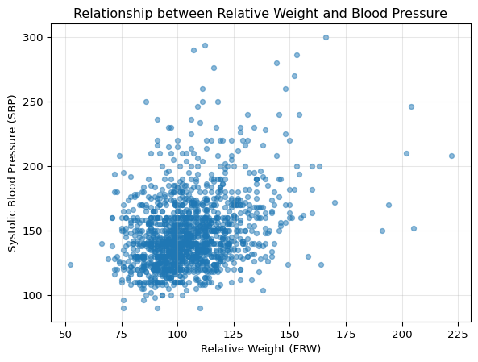
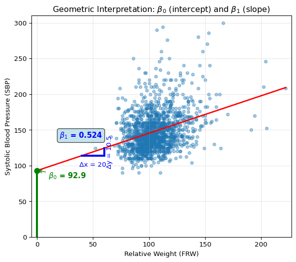
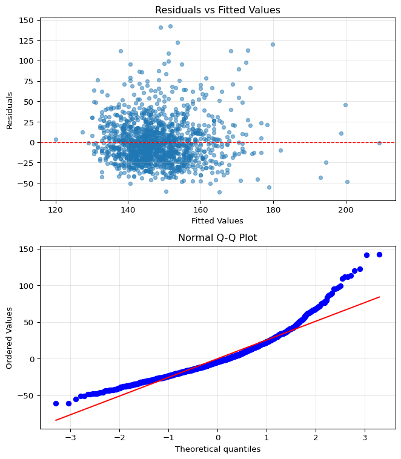
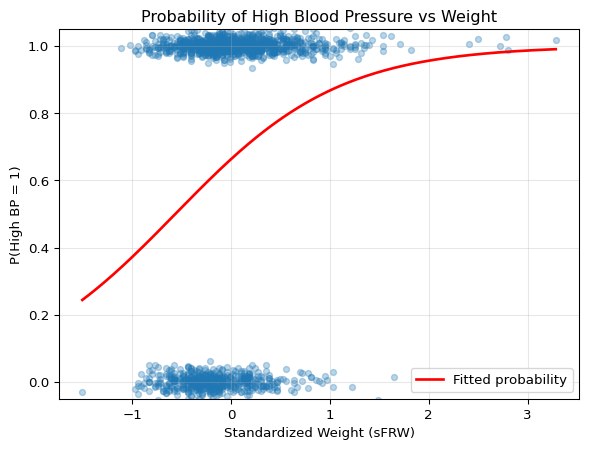
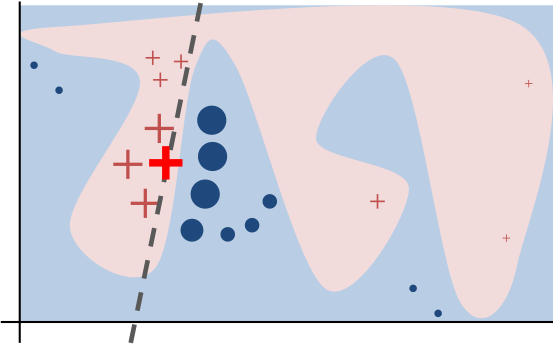

After completing this chapter, you will be able to:
Build and interpret linear regression models to understand relationships between variables, connecting the geometric intuition of least squares with the statistical framework of maximum likelihood estimation.
Evaluate regression coefficients meaningfully, including their practical interpretation, statistical significance via confidence intervals and hypothesis tests, and the crucial distinction between association and causation.
Diagnose and address model inadequacies using residual plots to check assumptions, applying transformations when relationships are nonlinear, and selecting predictors using principled criteria (AIC, BIC, cross-validation).
Extend regression to binary outcomes through logistic regression, understanding how the logit link enables probability modeling and interpreting coefficients as odds ratios.
Apply regression for both prediction and explanation, recognizing when linear models excel (interpretability needs, moderate sample sizes) versus when more complex methods are warranted.
Note
This chapter introduces the two most fundamental and widely used models in statistics: linear and logistic regression. While modern machine learning offers powerful black-box predictors, linear models remain essential for their interpretability and foundational role in statistical inference. The material is adapted from Chapter 13 of Wasserman (2013), supplemented with modern perspectives on model interpretability and practical examples.
9.2 Introduction: Why Linear Models Still Matter
9.2.1 The Power of Interpretability
In an age dominated by complex machine learning models – neural networks with millions of parameters, random forests with thousands of trees, gradient boosting machines with intricate interactions – one might wonder: why dedicate an entire chapter to something as simple as linear regression?
The answer lies in a fundamental trade-off in statistical modeling: complexity versus interpretability. While a deep neural network might achieve better prediction accuracy on a complex dataset, it operates as a “black box”. We feed in inputs, we get outputs, but the mechanism connecting them remains opaque. This opacity becomes problematic when we need to:
Explain predictions to stakeholders: “Why was this loan application denied?”
Identify which features matter most: “Which factors most strongly predict patient readmission?”
Ensure fairness and avoid bias: “Is our model discriminating based on protected attributes?”
Debug unexpected behavior: “Why did the model fail on this particular case?”
Linear models excel at all these tasks. Every coefficient has a clear interpretation: it tells us exactly how a one-unit change in a predictor affects the outcome, holding all else constant. This interpretability has made linear models the reference tools in fields where understanding relationships is as important as making predictions – from economics to medicine to social sciences.
Advanced: Are Neural Networks Black Boxes?
The story we presented above of neural networks being completely black boxes is a simplification nowadays. The field of interpretability research has developed sophisticated methods to understand neural networks, including techniques like mechanistic interpretability, activation analysis, and circuit discovery. These approaches have yielded notable insights, for example for large language models.
Still, there’s a crucial distinction: linear models are transparent by construction – each coefficient directly tells us how a unit change in input affects output. Neural networks must be reverse-engineered through complex analysis requiring specialized tools and expertise. Think of it as the difference between reading a recipe versus doing forensic analysis on a finished cake.
In short, while interpretability research continues to advance, linear models remain uniquely valuable when interpretability is a primary requirement rather than an afterthought – and linear models can be used as tools to understand more complex models, as seen in the next paragraph.
9.2.2 Linear Models as Building Blocks
Beyond their direct application, linear models serve as the foundation for building and understanding more complex methods:
Generalized Linear Models (GLMs) extend linear regression to handle non-normal outcomes
Mixed Effects Models add random effects to account for hierarchical data structures
Regularized Regression (Ridge, LASSO, Elastic Net) adds penalties to handle high-dimensional data
Local Linear Methods like LOESS use linear regression in small neighborhoods for flexible curve fitting
Even in the realm of “black-box” machine learning, linear models play a crucial role in model interpretation. Consider LIME (Local Interpretable Model-Agnostic Explanations) (Ribeiro, Singh, and Guestrin 2016), a popular technique for explaining individual predictions from any complex model. LIME works by:
Taking a prediction from a complex model (e.g., “This image is 92% likely to contain a cat”)
Generating perturbed samples around the input of interest
Getting predictions from the complex model for these perturbed samples
Fitting a simple linear model to approximate the complex model’s behavior locally
Using the linear model’s coefficients to explain which features drove the prediction
In essence, LIME uses the interpretability of linear models to shed light on the darkness of black-box predictions. When we can’t understand the global behavior of a complex model, we can at least understand its local behavior through the lens of linear approximation.
9.2.3 This Chapter’s Goal
Our goal in this chapter is to master both the theory and practice of linear and logistic regression. We’ll develop the mathematical framework, explore the connections to maximum likelihood estimation, and learn how to implement and interpret these models in practice. Along the way, we’ll address critical questions like:
How do we estimate regression coefficients and quantify our uncertainty about them?
What assumptions underlie linear regression, and what happens when they’re violated?
How do we choose which predictors to include when we have many candidates?
How do we extend the framework to binary outcomes?
By the end of this chapter, you’ll have a thorough understanding of these fundamental models – knowledge that will serve you whether you’re building interpretable models for scientific research or using LIME to explain neural network predictions.
Historical Note: The Origins of “Regression”
The term “regression” might seem odd for a method that predicts one variable from others. Its origin lies in the work of Sir Francis Galton (1822-1911), who studied the relationship between parents’ heights and their children’s heights. Galton observed that while tall parents tended to have tall children and short parents short children, the children’s heights tended to be closer to the population mean than their parents’ heights.
He called this phenomenon “regression towards mediocrity” (later “regression to the mean”). Though the name stuck, modern regression analysis is far more general than Galton’s original application – it’s a comprehensive framework for modeling relationships between variables.
Finnish Terminology Reference
For Finnish-speaking students, here’s a concise reference table of key terms in this chapter:
Regression is a method for studying the relationship between a response variableY and a covariateX. The response variable (also called the dependent variable) is what we’re trying to understand or predict – exam scores, blood pressure, sales revenue. The covariate is also called a predictor variable or feature – these are the variables we use to explain or predict the response, such as study hours, weight, or advertising spend.
When we observe pairs of these variables, we naturally ask: how does Y tend to change as X varies? The answer lies in the regression function:
r(x) = \mathbb{E}(Y \mid X=x) = \int y f(y \mid x) \, dy
This function tells us the expected (average) value of Y for any given value of X. Think of it as the systematic part of the relationship – the signal beneath the noise. If we knew r(x) perfectly, we could say “when X = x, we expect Y to be around r(x), though individual observations will vary.”
Our goal is to estimate the regression function r(x) from data of the form: (X_1, Y_1), (X_2, Y_2), \ldots, (X_n, Y_n) \sim F_{X,Y}
where each pair represents one observation drawn from some joint distribution. In this chapter, we take a parametric approach and assume that r has a specific functional form – namely, that it’s linear.
9.3.2 Regression Notation
Before diving into linear regression specifically, let’s establish a basic notation. Any regression model can be written as:
Y = \underbrace{r(X)}_{\text{signal}} + \underbrace{\epsilon}_{\text{noise}}
where \mathbb{E}(\epsilon | X) = 0. This decomposition is fundamental: the observed response equals the signal (the systematic component we can predict from X) plus noise or error (the random variation we cannot predict).1
Why can we always write it this way?
The proof is simple. Define \epsilon = Y - r(X), then: Y = Y + r(X) - r(X) = r(X) + \epsilon.
Moreover, since r(X) = \mathbb{E}(Y \mid X) by definition, we have: \mathbb{E}(\epsilon \mid X) = \mathbb{E}(Y - r(X) \mid X) = \mathbb{E}(Y \mid X) - r(X) = 0
This shows that the decomposition isn’t just a notational convenience – it’s a mathematical fact that any joint distribution of (X, Y) can be decomposed into a predictable part (the conditional expectation) and an unpredictable part (the zero-mean error).
This notation separates what’s predictable (the regression function) from what’s unpredictable (the error term). The art and science of regression lies in finding good estimates for r(x) from finite data.
9.3.3 The Simple Linear Regression Model
In simple linear regression, we assume r(x) is a linear function of one-dimensional X:
r(x) = \beta_0 + \beta_1 x
This defines the simple linear regression model:
Simple Linear Regression Model
Y_i = \beta_0 + \beta_1 X_i + \epsilon_i
where \mathbb{E}(\epsilon_i \mid X_i) = 0 and \mathbb{V}(\epsilon_i \mid X_i) = \sigma^2.
The parameters have specific interpretations:
\beta_0 is the intercept: the expected value of Y when X = 0
\beta_1 is the slope: the expected change in Y for a one-unit increase in X
\sigma^2 is the error variance: how much individual observations vary around the line
This model makes a bold claim: the relationship between X and Y can be adequately captured by a straight line, with all deviations from this line being random noise with constant variance. The assumption \mathbb{E}(\epsilon_i \mid X_i) = 0 ensures the line goes through the “middle” of the data at each value of X, while \mathbb{V}(\epsilon_i \mid X_i) = \sigma^2 (homoscedasticity) means the scatter around the line is equally variable across all values of X.
When is Linearity Reasonable?
More often than you might think! Many relationships are approximately linear, at least over the range of observed data. Even when the true relationship is nonlinear, linear regression often provides a useful first-order approximation – much like how we can approximate curves with tangent lines in calculus.
Consider height and weight, income and spending, or temperature and ice cream sales. While none of these relationships are perfectly linear across all possible values, they’re often reasonably linear within the range we observe. And sometimes that’s all we need for useful predictions and insights.
Once we’ve estimated the parameters – which we’ll discuss next –, we can make predictions and assess our model:
Regression Terminology
Let \hat{\beta}_0 and \hat{\beta}_1 denote estimates of \beta_0 and \beta_1. Then:
The fitted line is: \hat{r}(x) = \hat{\beta}_0 + \hat{\beta}_1 x
The predicted values or fitted values are: \hat{Y}_i = \hat{r}(X_i) = \hat{\beta}_0 + \hat{\beta}_1 X_i
The residuals are crucial – they represent what our model doesn’t explain. Small residuals mean our line fits well; large residuals suggest either a poor fit or inherent variability in the relationship.
9.3.4 Estimating Parameters: The Method of Least Squares
Now comes the central question: given our data, how do we find the “best” line? What values should we choose for \hat{\beta}_0 and \hat{\beta}_1?
The most common answer is the method of least squares. The idea is to find the line that minimizes the Residual Sum of Squares (RSS):
The RSS measures how well the line fits the data – it’s the sum of squared vertical distances from the points to the line. The least squares estimates are the values of \hat{\beta}_0 and \hat{\beta}_1 that make RSS as small as possible.
Imagine you’re trying to draw a line through a cloud of points on a
scatter plot. You want the line to be “close” to all the points
simultaneously. But what does “close” mean?
For each point, we have an error: how far the point lies above the
line (positive error) or below the line (negative error). We need to
aggregate these errors into a single measure of fit. We have several
options:
Sum of errors: Won’t work – positive and
negative errors cancel out. A terrible line far above half the points
and far below the others could have zero total error!
Sum of absolute errors: This works (no
cancellation), but absolute values are mathematically inconvenient –
they’re not differentiable at zero, making optimization harder.
Sum of squared errors: This is the winner!
Squaring prevents cancellation, penalizes large errors more than small
ones (outliers matter), and is mathematically convenient allowing
closed-form solutions.
The least squares line is the one that minimizes this sum of squared
errors. It’s the line that best “threads through” the cloud of points in
the squared-error sense.
To find the least squares estimates, we minimize RSS with respect to
\(\hat{\beta}_0\) and
\(\hat{\beta}_1\). Taking partial
derivatives and setting them to zero:
These are called the normal equations. From the
first equation:
\[\sum_{i=1}^{n} Y_i = n\hat{\beta}_0 + \hat{\beta}_1 \sum_{i=1}^{n} X_i\]
Dividing by \(n\) gives:
\(\bar{Y}_n = \hat{\beta}_0 + \hat{\beta}_1 \bar{X}_n\),
which shows the fitted line passes through
\((\bar{X}_n, \bar{Y}_n)\).
From the second equation and some algebra (expanding the products and
using the first equation), we get:
\[\hat{\beta}_1 = \frac{\sum_{i=1}^{n} X_i Y_i - n\bar{X}_n\bar{Y}_n}{\sum_{i=1}^{n} X_i^2 - n\bar{X}_n^2} = \frac{\sum_{i=1}^{n}(X_i - \bar{X}_n)(Y_i - \bar{Y}_n)}{\sum_{i=1}^{n}(X_i - \bar{X}_n)^2}\]
This is the sample covariance of
\(X\) and
\(Y\) divided by the sample variance of
\(X\).
Let’s see least squares in action. We’ll generate some synthetic data
with a known linear relationship plus noise, then find the least squares
line. The visualization will show two key perspectives:
The fitted line with residuals: How well the line
fits the data and what the residuals look like
The optimization landscape: How RSS changes as we
vary the slope, showing that our formula finds the minimum
import numpy as npimport matplotlib.pyplot as plt# Generate some example datanp.random.seed(42)n =30X = np.random.uniform(0, 10, n)true_beta0, true_beta1 =2, 1.5Y = true_beta0 + true_beta1 * X + np.random.normal(0, 2, n)# Calculate least squares estimatesX_mean = np.mean(X)Y_mean = np.mean(Y)beta1_hat = np.sum((X - X_mean) * (Y - Y_mean)) / np.sum((X - X_mean)**2)beta0_hat = Y_mean - beta1_hat * X_mean# Create visualization with stacked subplotsfig, (ax1, ax2) = plt.subplots(2, 1, figsize=(7, 8))# Top panel: Show the residualsax1.scatter(X, Y, alpha=0.6, s=50)X_plot = np.linspace(0, 10, 100)Y_plot = beta0_hat + beta1_hat * X_plotax1.plot(X_plot, Y_plot, 'r-', linewidth=2, label=f'Fitted line: Y = {beta0_hat:.2f} + {beta1_hat:.2f}X')# Draw residualsfor i inrange(n): Y_pred = beta0_hat + beta1_hat * X[i] ax1.plot([X[i], X[i]], [Y[i], Y_pred], 'g--', alpha=0.5, linewidth=0.8)ax1.set_xlabel('X')ax1.set_ylabel('Y')ax1.set_title('Least Squares Minimizes Squared Residuals')ax1.legend()ax1.grid(True, alpha=0.3)# Bottom panel: Show RSS as a function of slopeslopes = np.linspace(0.5, 2.5, 100)rss_values = []for slope in slopes: intercept = Y_mean - slope * X_mean # Best intercept given slope residuals = Y - (intercept + slope * X) rss = np.sum(residuals**2) rss_values.append(rss)ax2.plot(slopes, rss_values, 'b-', linewidth=2)ax2.axvline(beta1_hat, color='r', linestyle='--', linewidth=2, label=f'Optimal slope = {beta1_hat:.2f}')ax2.scatter([beta1_hat], [min(rss_values)], color='r', s=100, zorder=5)ax2.set_xlabel('Slope (β₁)')ax2.set_ylabel('Residual Sum of Squares')ax2.set_title('RSS as a Function of Slope')ax2.legend()ax2.grid(True, alpha=0.3)plt.tight_layout()plt.show()print(f"Least squares estimates: β₀ = {beta0_hat:.3f}, β₁ = {beta1_hat:.3f}")print(f"Minimum RSS = {min(rss_values):.2f}")
The top panel shows the fitted line and the residuals (green dashed
lines). Notice how the line “threads through” the cloud of points,
balancing the errors above and below. The residuals visualize what we’re
minimizing – we want these vertical distances (squared) to be as small
as possible in total.
The bottom panel reveals the optimization landscape. As we vary the
slope \(\beta_1\) (while adjusting
\(\beta_0\) optimally for each slope to
maintain the constraint that the line passes through
\((\bar{X}, \bar{Y})\)), the RSS forms
a parabola with a clear minimum. The red dashed line marks where our
formula places us – exactly at the minimum! This confirms that the least
squares formula genuinely finds the best fit in terms of minimizing
squared errors.
The values of \hat{\beta}_0 and \hat{\beta}_1 that minimize the RSS are:
where \bar{X}_n = \frac{1}{n}\sum_{i=1}^{n} X_i and \bar{Y}_n = \frac{1}{n}\sum_{i=1}^{n} Y_i are the sample means.
These formulas have intuitive interpretations:
The slope \hat{\beta}_1 is essentially the sample covariance between X and Y divided by the sample variance of X
The intercept \hat{\beta}_0 is chosen so the fitted line passes through the point (\bar{X}_n, \bar{Y}_n) – the center of the data
Least squares is very convenient because it has a closed-form solution. We don’t need iterative algorithms or numerical optimization2 – just plug the data into our formulas and we get the optimal answer.
Estimating Error Variance
We also need to estimate the error variance \sigma^2. An unbiased estimator is:
Why divide by n-2 instead of n? We’ve estimated two parameters (\beta_0 and \beta_1), which costs us two degrees of freedom. This adjustment ensures our variance estimate is unbiased.
9.3.5 Connection to Maximum Likelihood Estimation
So far, we’ve motivated least squares geometrically – it finds the line that minimizes squared distances. But there’s a deeper connection to the likelihood principle we studied in previous chapters.
Adding the Normality Assumption
Suppose we strengthen our assumptions by specifying that the errors are normally distributed: \epsilon_i \mid X_i \sim \mathcal{N}(0, \sigma^2)
To maximize the log-likelihood with respect to \beta_0 and \beta_1, we must minimize the sum: \sum_{i=1}^{n} (Y_i - \beta_0 - \beta_1 X_i)^2
But this is exactly the RSS! Therefore, under the normality assumption, the least squares estimators are also the maximum likelihood estimators.
This is a profound connection: the simple geometric idea of minimizing squared distances coincides with the principled statistical approach of maximum likelihood, at least when errors are normal.
What about estimating σ²?
From the conditional log-likelihood above we can also derive the MLE for the error variance: \hat{\sigma}^2_{\text{MLE}} = \frac{1}{n} \sum_{i=1}^{n} \hat{\epsilon}_i^2
However, this estimator is biased – it systematically underestimates the true variance. In practice, we use the unbiased estimator: \hat{\sigma}^2 = \frac{1}{n-2} \sum_{i=1}^{n} \hat{\epsilon}_i^2
The difference is small for large n, but the unbiased version provides more accurate confidence intervals and hypothesis tests, which is why it’s standard in linear regression.
9.3.6 Properties of the Least Squares Estimators
Understanding the statistical properties of our estimates is crucial for inference. How accurate are they? How does accuracy improve with more data? Can we quantify our uncertainty?
Finite Sample Properties
Let \hat{\beta} = (\hat{\beta}_0, \hat{\beta}_1)^T denote the least squares estimators. Assume that:
\mathbb{E}(\epsilon_i \mid X^n) = 0 for all i
\mathbb{V}(\epsilon_i \mid X^n) = \sigma^2 for all i (homoscedasticity)
\text{Cov}(\epsilon_i, \epsilon_j \mid X^n) = 0 for i \neq j (uncorrelated errors)
where s_X^2 = \frac{1}{n}\sum_{i=1}^{n}(X_i - \bar{X}_n)^2 is the sample variance of X.
This theorem tells us that the least squares estimators are unbiased – on average, they hit the true values. The variance formula allows us to compute standard errors:
These standard errors quantify the uncertainty in our estimates. Notice that both decrease with \sqrt{n} – more data means more precision.
Advanced: Derivation of Standard Errors
The variance formula comes from the fact that \hat{\beta}_1 is a linear combination of the Y_i’s: \hat{\beta}_1 = \sum_{i=1}^{n} w_i Y_i where w_i = \frac{X_i - \bar{X}_n}{\sum_{j=1}^{n}(X_j - \bar{X}_n)^2}.
Since the Y_i’s are independent with variance \sigma^2: \text{Var}(\hat{\beta}_1 \mid X^n) = \sigma^2 \sum_{i=1}^{n} w_i^2 = \frac{\sigma^2}{\sum_{i=1}^{n}(X_i - \bar{X}_n)^2} = \frac{\sigma^2}{n s_X^2}
The derivation for \hat{\beta}_0 is similar but more involved due to its dependence on both \bar{Y}_n and \hat{\beta}_1.
Asymptotic Properties and Inference
Under appropriate regularity conditions, as n \to \infty:
Consistency: \hat{\beta}_0 \xrightarrow{P} \beta_0 and \hat{\beta}_1 \xrightarrow{P} \beta_1
Confidence Intervals: An approximate (1-\alpha) confidence interval for \beta_j is: \hat{\beta}_j \pm z_{\alpha/2} \cdot \widehat{\text{se}}(\hat{\beta}_j)
Hypothesis Testing: The Wald test for H_0: \beta_1 = 0 vs. H_1: \beta_1 \neq 0 is: reject H_0 if |W| > z_{\alpha/2} where W = \hat{\beta}_1 / \widehat{\text{se}}(\hat{\beta}_1)
Finite Sample Refinement
For finite n, a more accurate test uses the Student’s t-distribution with n-2 degrees of freedom rather than the normal distribution. This accounts for the additional uncertainty from estimating \sigma^2. Most statistical software uses the t-distribution by default for regression inference.
9.3.7 Simple Linear Regression in Practice
Let’s see how these concepts work with real data. We’ll use the classic Framingham Heart Study dataset to explore the relationship between weight and blood pressure, building our understanding step by step.
Example: The Framingham Heart Study
The Framingham Heart Study is a long-term cardiovascular study that began in 1948 in Framingham, Massachusetts. This landmark study has provided crucial insights into cardiovascular disease risk factors. We’ll examine the relationship between relative weight (FRW - a normalized weight measure where 100 represents median weight for height) and systolic blood pressure (SBP - the pressure when the heart beats).
Step 1: Loading and Exploring the Data
First, let’s load the data and understand what we’re working with:
import pandas as pdimport numpy as npimport matplotlib.pyplot as pltimport statsmodels.formula.api as smfimport statsmodels.api as smfrom scipy import stats# Load the Framingham datafram = pd.read_csv('../data/fram.txt', sep='\t', index_col=0)# Display first few rows to understand the structureprint("First 6 rows of the Framingham data:")print(fram.head(6))print(f"\nDataset shape: {fram.shape}")print(f"Columns: {list(fram.columns)}")
First 6 rows of the Framingham data:
SEX AGE FRW SBP SBP10 DBP CHOL CIG CHD YRS_CHD DEATH \
ID
4988 female 57 135 186 NaN 120 150 0 1 pre 7
3001 female 60 123 165 NaN 100 167 25 0 16 10
5079 female 54 115 140 NaN 90 213 5 0 8 8
5162 female 52 102 170 NaN 104 280 15 0 10 7
4672 female 45 99 185 NaN 105 326 20 0 8 10
5822 female 51 93 142 NaN 90 234 35 0 4 8
YRS_DTH CAUSE
ID
4988 11 unknown
3001 17 unknown
5079 13 unknown
5162 11 unknown
4672 17 unknown
5822 13 unknown
Dataset shape: (1394, 13)
Columns: ['SEX', 'AGE', 'FRW', 'SBP', 'SBP10', 'DBP', 'CHOL', 'CIG', 'CHD', 'YRS_CHD', 'DEATH', 'YRS_DTH', 'CAUSE']
# Focus on our variables of interestprint("\nSummary statistics for key variables:")print(fram[['FRW', 'SBP']].describe())
Summary statistics for key variables:
FRW SBP
count 1394.000000 1394.000000
mean 105.365136 148.086083
std 17.752489 28.022062
min 52.000000 90.000000
25% 94.000000 130.000000
50% 103.000000 142.000000
75% 114.000000 160.000000
max 222.000000 300.000000
# Load the datafram <-read.csv('../data/fram.txt', sep='\t', row.names =1)# Display first few rows to understand the structurecat("First 6 rows of the Framingham data:\n")head(fram)cat("\nDataset dimensions:", dim(fram), "\n")cat("Column names:", names(fram), "\n")# Summary statistics for key variablessummary(fram[c("FRW", "SBP")])
Understanding the Variables
The dataset contains 1,394 observations with 13 variables including demographics, behaviors, and health outcomes.
FRW (Framingham Relative Weight): A normalized measure where 100 represents the median weight for a given height. Values above 100 indicate above-median weight.
SBP (Systolic Blood Pressure): Measured in mmHg, normal range is typically below 120. Values ≥140 indicate hypertension.
Step 2: Initial Visualization
Before fitting any model, let’s visualize the relationship between weight and blood pressure:
# Create scatter plot to explore the relationshipplt.figure(figsize=(7, 5))plt.scatter(fram['FRW'], fram['SBP'], alpha=0.5, s=20)plt.xlabel('Relative Weight (FRW)')plt.ylabel('Systolic Blood Pressure (SBP)')plt.title('Relationship between Relative Weight and Blood Pressure')plt.grid(True, alpha=0.3)plt.show()

# Create scatter plot to explore the relationshipplot(fram$FRW, fram$SBP, xlab ="Relative Weight (FRW)",ylab ="Systolic Blood Pressure (SBP)",main ="Relationship between Relative Weight and Blood Pressure",pch =16, col =rgb(0, 0, 0, 0.3))grid()
What the Visualization Tells Us
Looking at this scatter plot, we can observe:
There appears to be a positive relationship: As relative weight increases, blood pressure tends to increase.
There’s substantial variation: The wide spread of points suggests that weight alone won’t perfectly predict blood pressure - other factors must also be important.
The pattern looks compatible with the linearity hypothesis, in the sense that there’s no obvious curve or nonlinear pattern that would suggest a straight line is inappropriate.
This visualization motivates our next step: fitting a linear model to quantify this relationship.
Step 3: Fitting the Linear Regression Model
Now let’s fit the simple linear regression model: \text{SBP} = \beta_0 + \beta_1 \cdot \text{FRW} + \epsilon.
Linear regression with a quadratic loss is also called “ordinary least squares” (OLS), a term which can be found in statistical software like in Python’s statsmodel package.
# Fit a linear regression model using statsmodelsmodel = smf.ols('SBP ~ FRW', data=fram)results = model.fit()# Show the fitted equationprint(f"Fitted equation: SBP = {results.params['Intercept']:.2f} + {results.params['FRW']:.3f} * FRW")
Fitted equation: SBP = 92.87 + 0.524 * FRW
# Fit the linear regression modelfit <-lm(SBP ~ FRW, data = fram)# Show the fitted equationcat(sprintf("Fitted equation: SBP = %.2f + %.3f * FRW\n", coef(fit)[1], coef(fit)[2]))
We’ve now fitted our linear regression model. The fitted equation shows the estimated relationship between relative weight and blood pressure. In the following steps, we’ll use this model to make predictions, visualize the fit, check our assumptions, and interpret the statistical significance of our findings.
Step 4: Making Predictions
Let’s use our model to make predictions for specific weight values:
The plot above shows our fitted regression line. The equation in the box gives us the specific relationship: for each unit increase in relative weight (FRW), systolic blood pressure increases by approximately half a mmHg on average (see the exact coefficient in the equation above).
The plot below shows the geometric interpretation of intercept (\beta_0) and slope (\beta_1) parameters:
Show code
# Geometric interpretation of intercept and slopeplt.figure(figsize=(7, 6))plt.scatter(fram['FRW'], fram['SBP'], alpha=0.4, s=20)# Extend x range to show interceptx_extended = np.linspace(0, fram['FRW'].max(), 100)y_extended = results.params['Intercept'] + results.params['FRW'] * x_extendedplt.plot(x_extended, y_extended, 'r-', linewidth=2)# Show intercept (β₀) at x=0plt.plot([0, 0], [0, results.params['Intercept']], 'green', linewidth=3)plt.plot(0, results.params['Intercept'], 'go', markersize=8)plt.annotate(r'$\beta_0$'+f' = {results.params["Intercept"]:.1f}', xy=(0, results.params['Intercept']), xytext=(10, results.params['Intercept'] -10), fontsize=11, color='green', fontweight='bold', arrowprops=dict(arrowstyle='->', color='green', lw=1))# Show slope (β₁) interpretationx_demo = [40, 60]y_demo = [results.params['Intercept'] + results.params['FRW'] * x for x in x_demo]plt.plot(x_demo, [y_demo[0], y_demo[0]], 'b-', linewidth=3)plt.plot([x_demo[1], x_demo[1]], y_demo, 'b-', linewidth=3)plt.annotate('Δx = 20', xy=(50, y_demo[0] -15), fontsize=10, color='blue', ha='center')plt.annotate(f'Δy = {20* results.params["FRW"]:.1f}', xy=(x_demo[1] +2, np.mean(y_demo)), fontsize=10, color='blue', rotation=90, va='center')plt.text(20, y_demo[0] +25, r'$\beta_1$'+f' = {results.params["FRW"]:.3f}', fontsize=11, color='blue', fontweight='bold', bbox=dict(boxstyle='round', facecolor='lightblue', alpha=0.7))plt.xlim(-5, fram['FRW'].max() +5)plt.ylim(0, fram['SBP'].max() +10)plt.xlabel('Relative Weight (FRW)')plt.ylabel('Systolic Blood Pressure (SBP)')plt.title(r'Geometric Interpretation: $\beta_0$ (intercept) and $\beta_1$ (slope)')plt.grid(True, alpha=0.3)plt.show()

Step 6: Model Diagnostics
Before interpreting our regression results, let’s check if our model assumptions are satisfied using diagnostic plots:
# Create diagnostic plotsfig, (ax1, ax2) = plt.subplots(2, 1, figsize=(7, 8))# Get residuals and fitted valuesresiduals = results.residfitted = results.fittedvalues# Plot 1: Residuals vs Fitted Valuesax1.scatter(fitted, residuals, alpha=0.5, s=20)ax1.axhline(y=0, color='r', linestyle='--', linewidth=1)ax1.set_xlabel('Fitted Values')ax1.set_ylabel('Residuals')ax1.set_title('Residuals vs Fitted Values')ax1.grid(True, alpha=0.3)# Plot 2: Q-Q plot for normality checkstats.probplot(residuals, dist="norm", plot=ax2)ax2.set_title('Normal Q-Q Plot')ax2.grid(True, alpha=0.3)plt.tight_layout()plt.show()

# Create diagnostic plotspar(mfrow =c(2, 1))# Plot 1: Residuals vs Fittedplot(fit, which =1)# Plot 2: Q-Q plotplot(fit, which =2)# Reset plot layoutpar(mfrow =c(1, 1))
What the Diagnostic Plots Tell Us
Residuals vs Fitted: The residuals are approximately centered around zero with reasonably random scatter, though we can see some evidence of skew (asymmetry) in the distribution.
Q-Q Plot (Quantile-Quantile Plot): This plot compares the distribution of our residuals to a normal distribution. If residuals were perfectly normal, all points would fall exactly on the diagonal line. Here we see the points roughly follow the line but with some deviation at the extremes (the tails), confirming that the residuals are not perfectly normally distributed.
Important: These minor violations of assumptions are common with real data and not necessarily dealbreakers. Linear regression is quite robust to modest departures from normality, especially with large samples like ours (n=1,394). However, we should keep these limitations in mind when interpreting results and consider transformations or robust methods if violations become severe.
Step 7: Model Interpretation
Now let’s examine and interpret the full regression output:
H_0: \beta_1 = \beta_2 = \ldots = \beta_k = 0 (no predictors have any effect)
Tests if any coefficient is non-zero
Our result: F = 172.5, p < 0.001 → reject H_0 → model is useful
R-Squared (R^2, coefficient of determination)
Proportion of variance in Y explained by the model (typically between 0 and 1)
Measures accuracy on training data
In our example: model explains roughly 11% of blood pressure variation (see exact value in output above)
Low R^2 common when many unmeasured factors affect outcome, which happens for many real-world data
Reading the Coefficients Table:
Intercept (\beta_0): Expected SBP when FRW = 0 (extrapolation - not meaningful here)
FRW coefficient (\beta_1): Each unit increase in relative weight increases SBP by approximately 0.5 mmHg on average (see exact value in output)
Standard errors: Quantify uncertainty in estimates
95% CI for \beta_1: Check the confidence interval in the output - it quantifies our uncertainty about the true slope
Model Quality Assessment:
Residual Standard Error: Typical prediction error (see output for exact value)
Statistical vs. Practical Significance: While statistically significant (p < 0.001), the effect size is modest
Predictive Power: The relatively low R^2 indicates that weight alone is not a strong predictor of blood pressure
Key Takeaway: The regression confirms a statistically significant positive relationship between weight and blood pressure. However, the modest R^2 reminds us that blood pressure is multifactorial – diet, exercise, genetics, stress, and many other factors play important roles.
Summary: What We’ve Learned
Through this comprehensive example, we’ve followed a complete regression workflow:
Data Exploration: Understood our variables and their context
Initial Visualization: Examined the relationship visually before modeling
Model Fitting: Applied least squares to find the best-fitting line
Making Predictions: Used the model to predict new values
Visualizing the Fit: Showed the fitted line
Model Diagnostics: Checked assumptions through residual plots
Model Interpretation: Understood the statistical tests and what they tell us
The Framingham data reveals an important finding: weight has a statistically significant effect on blood pressure (p < 0.001), with each unit increase in relative weight associated with approximately a 0.5 mmHg increase in systolic blood pressure (see the exact coefficient in the regression output above).
The modest R^2 (around 11% of variance explained) doesn’t diminish the medical importance of this relationship. Rather, it reminds us that:
Blood pressure is multifactorial - weight is one important factor among many (age, diet, exercise, genetics, stress)
Even when individual predictors explain modest variance, they can still be clinically meaningful
Simple linear regression effectively quantifies real-world relationships and their uncertainty
9.4 Multiple Linear Regression
9.4.1 Extending the Model to Multiple Predictors
Real-world phenomena rarely depend on just one predictor. A person’s blood pressure isn’t determined solely by their weight – age, diet, exercise, genetics, and countless other factors play roles. Multiple linear regression extends our framework to handle multiple predictors simultaneously.
The Model
With k predictors (covariates), the multiple linear regression model becomes:
X_{ij} is the value of the j-th covariate for observation i
\beta_0 is the intercept
\beta_j is the coefficient for the j-th covariate (for j = 1, \ldots, k)
\epsilon_i is the error term with \mathbb{E}(\epsilon_i \mid X_i) = 0 and \mathbb{V}(\epsilon_i \mid X_i) = \sigma^2
Convention: Incorporating the Intercept
The intercept \beta_0 is often incorporated directly into the covariate notation by defining X_{i0} = 1 for all observations i = 1, \ldots, n. This allows us to write the model more compactly as: Y_i = \sum_{j=0}^{k} \beta_j X_{ij} + \epsilon_i
This convention simplifies matrix notation and many derivations. When you see design matrices or covariate vectors, check whether the intercept is handled explicitly (with a column of ones) or implicitly (assumed but not shown).
Indexing Confusion: Starting from 0 vs 1
You’ll encounter two indexing conventions in the literature:
Convention 1 (0-indexed, used here in the lecture notes):
X_{i0} = 1 for the intercept
X_{i1}, X_{i2}, \ldots, X_{ik} for the k actual covariates
Both are correct! The key is consistency within a given analysis. Software typically handles this transparently – R’s lm() and Python’s statsmodels automatically add the intercept column regardless of your indexing preference.
Multiple Linear Regression in Matrix Form
The model is more elegantly expressed using matrix notation: \mathbf{Y} = \mathbf{X}\boldsymbol{\beta} + \boldsymbol{\epsilon}
where:
\mathbf{Y} is an n \times 1 vector of responses
\mathbf{X} is an n \times (k+1) design matrix (often written as n \times k when the intercept is implicit)
\boldsymbol{\beta} is a (k+1) \times 1 vector of coefficients (or k \times 1 when intercept is implicit)
\boldsymbol{\epsilon} is an n \times 1 vector of errors
The estimated regression function is: \hat{r}(x) = \hat{\beta}_0 + \sum_{j=1}^{k} \hat{\beta}_j x_j
An unbiased estimate of the error variance\sigma^2 is: \hat{\sigma}^2 = \frac{1}{n-k-1} \sum_{i=1}^{n} \hat{\epsilon}_i^2 = \frac{1}{n-k-1} ||\mathbf{Y} - \mathbf{X}\hat{\boldsymbol{\beta}}||^2
We divide by n-k-1 because we’ve estimated k+1 parameters (including the intercept).
Confidence intervals for individual coefficients: \hat{\beta}_j \pm z_{\alpha/2} \cdot \widehat{\text{se}}(\hat{\beta}_j)
where \widehat{\text{se}}^2(\hat{\beta}_j) is the j-th diagonal element of \hat{\sigma}^2(\mathbf{X}^T\mathbf{X})^{-1}.
The Meaning of a Coefficient
In multiple regression, the interpretation of coefficients becomes more subtle. The coefficient \beta_j represents the expected change in Y for a one-unit change in X_j, holding all other covariates constant.
This is the crucial concept of statistical control or adjustment. We’re estimating the partial effect of each predictor, after accounting for the linear effects of all other predictors in the model.
This interpretation assumes:
The other variables can actually be held constant (may not be realistic)
The relationship is truly linear
No important interactions exist between predictors
9.4.2 Multiple Regression in Practice
We’ll now add two biologically relevant predictors to our weight-only model:
SEX: Categorical variable (“female”/“male” in the data), which has two levels; the general rule for a predictor with k levels is in the section on categorical predictors below
R and Python automatically encode with female = 0 (reference), male = 1
Output shows as “SEX[T.male]” (Python) or “SEXmale” (R)
Coefficient interpretation: difference in mean SBP for males vs females
CHOL: Total serum cholesterol in mg/dL (typical range: 150-250 mg/dL)
A known cardiovascular risk factor
Coefficient interpretation: change in SBP per 1 mg/dL increase in cholesterol
We’ll build three models:
Model 1: SBP ~ FRW (baseline simple regression)
Model 2: SBP ~ FRW + SEX + CHOL (multiple regression)
Adds SEX and CHOL predictors
Model 3: SBP ~ FRW + SEX + CHOL + FRW:SEX (with interaction/cross term)
FRW:SEX is an interaction term - that is the product FRW × SEX (weight × 0/1 for female/male)
This tests: “Does weight affect blood pressure differently for males vs females?”
For females (SEX = 0): Effect of weight = \beta_{\text{FRW}}
For males (SEX = 1): Effect of weight = \beta_{\text{FRW}} + \beta_{\text{FRW:SEX}}
If \beta_{\text{FRW:SEX}} > 0: weight increases BP more for males than females
Example: From Simple to Multiple Regression
Let’s build on our simple regression model by adding sex and cholesterol as predictors:
Key Observations from the Multiple Regression Results:
Minimal coefficient change: The FRW coefficient changes only slightly when adding other predictors (compare Model 1 vs Model 2 outputs above). This stability suggests weight has a robust relationship with blood pressure that isn’t confounded by sex or cholesterol.
Sex effect in this cohort: In this Framingham cohort, the model shows males have somewhat lower blood pressure than females (see the SEX coefficient in Model 2 output). This pattern in the 1950s-60s data (mean age ≈ 52 years) may reflect post-menopausal effects in women.
Modest R-squared improvement: Adding sex and cholesterol only marginally improves R^2 (compare the R-squared values between Model 1 and Model 2). This teaches us that more predictors don’t always mean much better predictions.
No meaningful interaction: The interaction term in Model 3 is near zero (see FRW:SEX coefficient), suggesting weight affects blood pressure similarly for both sexes. Not all hypothesized interactions turn out to be important!
Real Data Lessons
These Framingham results illustrate important realities of data analysis:
Effects can be counterintuitive: Women having higher blood pressure in this 1950s-60s cohort (mean age 52) surprises many, but it’s consistent across all age groups in the data. Historical context and demographics matter!
More predictors ≠ much better fit: Despite adding two predictors and an interaction, we only explained an additional 1.5% of variance.
Most interactions are null: We often hypothesize interactions that don’t materialize. That’s fine – testing and rejecting hypotheses is part of science.
Biological systems are complex: Even this model explains only 12.5% of blood pressure variation. The remaining 87.5% comes from genetics, lifestyle, measurement error, and countless other factors.
9.4.3 Categorical Predictors with More Than Two Levels
A predictor with k unordered levels – an age band, a country, an education level, a treatment arm – cannot be entered as a single numeric column. Coding four age bands as 1, 2, 3, 4 would tell the model that the step from the first band to the second is exactly the same as the step from the third to the fourth, an equal spacing the data never justified. What software does instead is build k-1indicator variables (also called dummy variables), each a 0/1 column marking one level, leaving one level out as the reference level. This is called treatment coding, and both R’s lm() and Python’s smf.ols() apply it automatically to any factor or string column. Note that this is similar to one-hot encoding in machine learning, with the difference that here we define one of the categories as the reference level (all zeros).
With four age bands and 45-48 as the reference level, the three added columns are:
Age band
AGEGRP[T.49-52]
AGEGRP[T.53-56]
AGEGRP[T.57-62]
45-48 (reference)
0
0
0
49-52
1
0
0
53-56
0
1
0
57-62
0
0
1
These three columns join the intercept column of 1s and the other covariates in the design matrix written out above: each observation contributes the row matching its age band, and an observation in the reference band contributes a row of zeros.
Why k-1 columns and not k? Because the model already carries the intercept column of 1s. A fourth indicator would make the four level columns add up to exactly that column, so one column would be an exact linear combination of the others, \mathbf{X}^T\mathbf{X} would be singular, and the least squares theorem above – which assumes \mathbf{X}^T\mathbf{X} is invertible – would not apply. (Without an intercept in the model, all k indicators can be used.)
Example: Age groups in the Framingham data
The Framingham participants are aged 45 to 62. Instead of assuming that blood pressure changes linearly with age, we cut the range into four bands and give each band its own coefficient:
# Cut AGE into four bands; pd.cut returns a categorical column,# which the formula interface encodes with treatment coding# (write C(AGEGRP) to force it explicitly, e.g. for a numeric column)fram['AGEGRP'] = pd.cut(fram['AGE'], bins=[44, 48, 52, 56, 62], labels=['45-48', '49-52', '53-56', '57-62'])print(fram['AGEGRP'].value_counts().sort_index())agemod = smf.ols('SBP ~ FRW + SEX + AGEGRP', data=fram).fit()print(agemod.summary().tables[1])
The intercept is the fitted mean for the reference group – a female in the 45-48 band – at FRW = 0. As in the simple regression, FRW = 0 is an extrapolation, so this is a bookkeeping quantity rather than a blood pressure anyone has.
Each AGEGRP coefficient is the difference in mean SBP from the 45-48 band, at equal weight and sex: about 5.75 mmHg for 49-52, 9.30 for 53-56 and 11.53 for 57-62.
A comparison between two non-reference levels is a difference of coefficients: the 53-56 band sits 9.30 - 5.75 = 3.55 mmHg above the 49-52 band.
Each p-value tests that one level against the reference. None of them answers the question of whether age group belongs in the model at all.
The reference level is a choice, not a result. Both R and statsmodels take the first level – alphabetical for a plain string column, the first category for a factor – so 45-48 is the reference here only because it comes first. Refitting with the oldest band as the reference instead (C(AGEGRP, Treatment("57-62")) in Python, relevel() in R) gives:
Show code
alt = smf.ols('SBP ~ FRW + SEX + C(AGEGRP, Treatment("57-62"))', data=fram).fit()alt_rows = alt.params.filter(like='AGEGRP')alt_rows.index = [name.split('[T.')[1].rstrip(']') for name in alt_rows.index]print(alt_rows.round(2))print(f"R-squared: {alt.rsquared:.4f} (was {agemod.rsquared:.4f})")
Every band is now described relative to 57-62, so the rows read -11.53, -5.78 and -2.23, while R^2, the fitted values and every prediction stay exactly as they were. Changing the reference reparameterises the model; it does not change the model.
To ask whether the factor as a whole belongs in the model, the individual t-tests are the wrong tool: they compare levels to the reference one at a time, and their answers depend on which level is the reference. The right tool is an F-test: the same test used earlier for overall model significance, but applied to a subset of the coefficients rather than to all of them at once. Fit the model with and without the three indicator columns and compare:
In R the same comparison is anova(reduced, agemod). With F = 12.99 on 3 and 1388 degrees of freedom and p \approx 2 \times 10^{-8}, age group clearly earns its place.
The mechanics are identical in logistic regression: a k-level factor contributes k-1 indicator columns, and each coefficient is the change in log-odds relative to the reference level, holding the other predictors fixed.
9.4.4 Model Selection: Choosing the Right Predictors
With many potential predictors, a critical question arises: which ones should we include? Including too few predictors (underfitting) leads to bias; including too many (overfitting) increases variance and reduces interpretability. Model selection seeks the sweet spot.
The Core Problem
When we have k potential predictors, there are 2^k possible models (each predictor is either in or out). With just 10 predictors, that’s 1,024 models; with 20 predictors, over a million! We need:
A way to score each model’s quality
An efficient search strategy to find the best model
Scoring Models: The Bias-Variance Trade-off
The fundamental challenge is that training error – how well the model fits the data used to build it – is a bad guide to how well it will predict new data. Complex models always fit training data better, but they may perform poorly on new data. This is a manifestation of the bias-variance tradeoff we studied in Chapter 3: as we add more predictors to a regression, bias decreases (better fit to the true relationship) but variance increases (more sensitivity to the particular sample). Too few predictors leads to underfitting (high bias), while too many leads to overfitting (high variance).
Prediction Risk (Quadratic Loss)
For a model S with predictors \mathcal{X}_S, the prediction risk under quadratic loss is: R(S) = \sum_{i=1}^{n} \mathbb{E}[(\hat{Y}_i(S) - Y_i^*)^2]
where Y_i^* is a future observation at covariate value X_i, and \hat{Y}_i(S) is the prediction from model S.
Why Squared Error Loss?
We use quadratic loss throughout model selection because:
It matches our least squares estimation method (consistency across model fitting and model evaluation)
It leads to tractable bias-variance decompositions
It penalizes large errors more than small ones (often desirable in practice)
Other loss functions (absolute error, 0-1 loss) are valid but lead to different optimal models.
Since we can’t directly compute prediction risk (we don’t have future data!), we need estimates. Many model selection criteria follow a similar form which we want to maximize:
\text{Model Score} = \underbrace{\text{Goodness of Fit}}_{\text{how well model fits data}} - \underbrace{\text{Complexity Penalty}}_{\text{penalty for too many parameters}}
Equivalently, some model selection metrics aim to minimize:
This fundamental trade-off appears in different guises across the methods we’ll examine. The key insight is that we must balance how well we fit the current data against the danger of overfitting.
\(\text{RSS}(S)\) = residual sum of
squares (training error)
\(|S|\) = number of parameters in
model \(S\)
\(\hat{\sigma}^2\) = error variance
estimate from the full model
Interpretation: The first term measures lack of fit,
the second penalizes complexity. Named after statistician Colin
Mallows who developed it.
When to use: Linear regression with normal errors
when you want an unbiased estimate of prediction risk.
AIC (Akaike Information Criterion) takes an
information-theoretic approach. The standard definition used in
statistical software is:
\[\text{AIC}(S) = -2\ell_S + 2|S|\]
where: - \(\ell_S\) is the
log-likelihood at the MLE - \(|S|\) is
the number of parameters in model \(S\)
(including the intercept)
We minimize AIC to select the best model.
Conceptually, this is equivalent to maximizing “goodness of fit minus
complexity penalty” since minimizing
\(-2\ell_S + 2|S|\) is the same as
maximizing \(\ell_S - |S|\).
Key insight: For linear regression with normal
errors, AIC is equivalent to Mallow’s
\(C_p\) (they select the same
model).
Philosophy: AIC was developed by statistician Hirotugu Akaike
to approximate the Kullback-Leibler divergence between the true and
fitted models. It aims to minimize prediction error, not find the “true”
model – recognizing that the true model might be too complex to express
mathematically.
When to use: When prediction accuracy is the primary
goal and you believe the true model may be complex.
BIC (Bayesian Information Criterion) adds a stronger
complexity penalty. The standard definition is:
\[\text{BIC}(S) = -2\ell_S + |S|\log n\]
where \(n\) is the sample size. We
minimize BIC to select the best model.
Note that the penalty \(|S|\log n\)
grows with sample size, making BIC more conservative than AIC (which has
a fixed penalty of \(2|S|\)). For
\(n > e^2 \approx 7.4\), BIC penalizes
complexity more heavily than AIC.
Philosophy: BIC, developed by statistician Gideon E.
Schwarz, has a Bayesian interpretation – it approximates the log
posterior probability of the model. As
\(n \to \infty\), BIC selects the true
model with probability 1 (consistency), if the true model belongs to
the candidate model set.
Key difference from AIC: Stronger penalty leads to
simpler models. BIC assumes a true, relatively simple model exists among
the candidates.
When to use: When you believe a relatively simple
true model exists and want consistency.
Alternatively, we can approximate prediction error by training our
model on a subset of the data, and testing on the
remaining (held-out) set. Repeating this procedure multiple times for
different partitions of the data is called
cross-validation (CV).
Leave-one-out Cross-Validation (LOO-CV) directly
estimates prediction error on one held-out data point at a time:
where \(\hat{Y}_{(i)}\) is the
prediction for observation \(i\) from a
model fit without observation \(i\).
LOO-CV can be very expensive (requires refitting the model
\(n\) times!) but for linear models it
can be computed efficiently.
\(k\)-fold CV:
Divide data into \(k\) groups called
“folds” (often \(k=5\) or
\(k=10\)), train on
\(k-1\) folds, test on the held-out
fold, repeat and average. This only requires retraining the model
\(k\) times.
When to use: When you want a direct, model-agnostic
estimate of prediction performance. Essential for complex models where
AIC/BIC aren’t available. CV is a common evaluation technique in machine
learning.
Search Strategies
Even with a scoring criterion, we can’t check all 2^k models when k is large. Common search strategies include:
Forward Stepwise Selection: Start with no predictors, add the best one at each step
Backward Stepwise Selection: Start with all predictors, remove the worst one at each step
Best Subset Selection: Check all models of each size (computationally intensive)
Greedy Search Limitations
Stepwise methods are greedy algorithms – they make locally optimal choices without considering the global picture. They may miss the best model. For example, two predictors might be useless alone but powerful together due to interaction effects.
Comparing Predictor Importance
Once we’ve selected a model, we often want to know: which predictors have the most impact? The raw regression coefficients can be misleading because predictors are on different scales. A predictor measured in millimeters will have a much smaller coefficient than one measured in kilometers, even if they have the same actual importance.
The solution is to standardize predictors before comparing coefficients. After standardization:
All predictors have mean 0 and the same spread
Coefficients become directly comparable
The coefficient magnitude indicates relative importance
Gelman & Hill’s recommendation: Gelman and Hill (2007) recommend dividing continuous predictors by 2 standard deviations (not 1). This makes binary and continuous predictors more comparable, since a binary predictor’s standard deviation is at most 0.5, so dividing by 2 SDs puts it on a similar scale.
After standardization, predictors with larger coefficient magnitudes have stronger effects on the outcome (in standard deviation units). However, when predictors are correlated, standardized coefficients don’t directly measure the unique variance explained by each predictor. For that, consider partial R^2 or other variance decomposition methods.
Heuristics for Model Selection
Beyond automated criteria, Gelman and Hill (2007) suggest these practical guidelines:
Include predictors you expect to be important based on subject knowledge
Consider creating composite predictors: Not all related variables need separate inclusion – you can combine multiple covariates into meaningful composites (e.g., a socioeconomic index from income, education, and occupation)
Add interaction terms for strong predictors: When predictors have large effects, their interactions often matter too
Use statistical significance and sign to guide decisions:
Significant with expected sign: Keep these predictors
Significant with unexpected sign: Investigate further – may indicate model misspecification, confounding, or data issues
Non-significant with expected sign: Often worth keeping if theoretically important
Non-significant with unexpected sign: Generally drop these
Remember: statistical significance isn’t everything. A predictor’s theoretical importance and practical significance matter too.
Example: Age as a factor or as a single number
The age-band model spends three coefficients on age, one per non-reference band. The alternative is to let age enter as a single number:
Show code
linmod = smf.ols('SBP ~ FRW + SEX + AGE', data=fram).fit()print(f"AGE coefficient: {linmod.params['AGE']:.3f} mmHg per year")print(f"R-squared: {linmod.rsquared:.4f} with {int(linmod.df_model)} predictors "f"(factor model: {agemod.rsquared:.4f} with {int(agemod.df_model)})")
AGE coefficient: 0.885 mmHg per year
R-squared: 0.1405 with 3 predictors (factor model: 0.1420 with 5)
The simpler model fits nearly as well with two fewer parameters, so over this age range the linear term does the job. The factor version is what you reach for when you are unwilling to assume that one extra year of age moves blood pressure by the same amount at 46 as at 60.
Controlling for Background Variables
Many studies control for background variables (age, sex, education, socioeconomic status, etc.). This simply means including these variables as predictors in the model to “remove their impact” on the relationship of interest.
For example, in our earlier Framingham analysis, Model 2 controlled for sex and cholesterol when examining the weight-blood pressure relationship:
Model 1: SBP ~ FRW (simple regression with weight only)
Model 2: SBP ~ FRW + SEX + CHOL (controlling for sex and cholesterol)
The weight coefficient changed only slightly between models (see the outputs above), suggesting the relationship isn’t confounded by these variables.
Limitation of Statistical Control
Controlling only captures linear effects of the control variables. If age has a nonlinear effect on the outcome (e.g., quadratic), simply including age as a linear term won’t fully control for it. Background variables can still affect inferences if their effects are nonlinear.
Consider including polynomial terms or splines for control variables when you suspect nonlinear relationships, or entering the control variable as a categorical factor, which lets its effect differ freely between levels.
9.4.5 Regression Assumptions and Diagnostics
Linear regression makes strong assumptions. When violated, our inferences may be invalid.
Validity: Are the data relevant to your research question? Does the outcome measure what you think it measures? Are all important predictors included? Missing key variables can invalidate all conclusions.
Additivity and Linearity: The model assumes Y = \beta_0 + \beta_1 X_1 + \beta_2 X_2 + .... If relationships are nonlinear, consider transformations (\log, square root), polynomial terms, or interaction terms.
Independence of Errors: Each observation’s error should be independent of others. Watch out for time series (temporal correlation), spatial data (geographic clustering), or grouped data (students within schools).
Equal Variance (Homoscedasticity): Error variance should be constant across all predictor values. Violation makes standard errors and confidence intervals unreliable.
Normality of Errors: Errors should follow a normal distribution. This is the least important – with large samples, the Central Limit Theorem ensures valid inference even with non-normal errors. Outliers matter more than the exact distribution shape.
Checking Assumptions: Residual Plots
Since the statistical assumptions of linear regression focus on the errors \epsilon_i = Y_i - \hat{Y}_i, visualizing the residuals provides our primary diagnostic tool. The most important plot is residuals versus fitted values, which can reveal multiple assumption violations at once.
Residuals vs Fitted: Reveals problems with linearity and constant variance assumptions.
Q-Q Plot: Checks whether residuals follow a normal distribution.
Interpreting Residual Patterns
Good residuals look like random noise around zero – no patterns, just scatter. Specific patterns reveal specific problems:
Curved patterns (U-shape, waves): Nonlinearity detected. The true relationship isn’t straight. Try transformations or polynomial terms.
Funnel shape (variance changes with fitted values): Heteroscedasticity. Errors have unequal variance. Consider log-transforming Y or weighted least squares.
Outliers or extreme points: Can dominate the entire regression. Check if they’re data errors or reveal model limitations.
Correlation vs. Causation
A significant regression coefficient does not imply causation! Regression finds associations, not causal relationships. For example, ice cream sales and swimming pool drownings are positively correlated (both increase in summer), but ice cream doesn’t cause drowning.
Establishing causation requires theoretical justification, temporal precedence, ruling out confounders, and ideally randomized experiments. We’ll explore causal inference in detail in Chapter 11.
9.5 Logistic Regression
9.5.1 Modeling Binary Outcomes
So far, we’ve assumed the response variable Y is continuous. But what if Y is binary? Consider:
Where does this formula come from? Why “logistic”
regression?
Point is, when \(Y\) is binary,
linear regression produces continuous predictions – not the 0s and 1s we
observe with binary data. The natural approach is to model the
probability
\(p = \mathbb{P}(Y = 1 \mid X)\)
instead of \(Y\).
We could try to model the probability
\(p\) with a linear model such as
\(p = \beta_0 + \beta_1 X\). However,
we would immediately hit two problems:
Linear functions are unbounded: when
\(X\) is large,
\(\beta_0 + \beta_1 X\) can exceed 1;
when \(X\) is small, it can fall below
0. Both give impossible “probabilities.”
Binary data strongly violates the homoscedasticity assumption – a
Bernoulli (i.e., binary) variable with probability
\(p\) has variance
\(p(1-p)\), which depends on
\(X\).
The trick is that instead of modelling directly
\(p\), we model the
log-odds (logarithm of the probability ratio), that is
\(\text{logit}(p) = \log\left(\frac{p}{1-p}\right)\),
which is an unbounded quantity that lives in
\((-\infty, \infty)\).
The logistic
function is then the function that allows us to map the logit values
back to \((0,1)\), ensuring valid
probabilities regardless of predictor values.
The logistic function emerges naturally from maximum likelihood with
Bernoulli data. Since
\(Y_i \sim \text{Bernoulli}(p_i)\), the
likelihood is:
We need to connect \(p_i\) to the
predictors \(X_i\). We could try
various transformations, but the logit turns out to be
special – it’s the “canonical link” for Bernoulli distributions, meaning
it makes the mathematics particularly elegant. Specifically, if we set:
\[\log\left(\frac{p_i}{1-p_i}\right) = \beta_0 + \beta_1 X_i\]
then the log-likelihood becomes concave in the
parameters \(\beta_0, \beta_1\). This
is crucial: a concave function has a unique maximum, so we’re guaranteed
to find the best fit without worrying about local maxima. Solving the
logit equation for \(p_i\) gives us the
logistic function.
Let’s visualize the logistic function to build intuition for how it
transforms linear predictors into probabilities:
The S-shaped curve is the logistic function in action. Notice three
critical features:
Bounded output: No matter how extreme the input (β₀
+ β₁X), the output stays strictly between 0 and 1
Decision boundary: When the linear predictor equals
0, the probability equals 0.5 – this is the natural decision
threshold
Smooth transitions: Unlike a hard step function,
the logistic provides gradual probability changes, reflecting
uncertainty near the boundary
This smooth mapping from
\((-\infty, \infty) \to (0,1)\) is what
makes logistic regression both mathematically tractable and practically
interpretable.
Unlike linear regression, logistic regression has no closed-form solution. The parameters are estimated via maximum likelihood using numerical optimization algorithms, as implemented in common statistical packages.
Interpreting Coefficients: Odds Ratios
In logistic regression, coefficients have a specific interpretation:
\beta_j is the change in log-odds for a one-unit increase in X_j, holding other variables constant
e^{\beta_j} is the odds ratio: the factor by which odds are multiplied for a one-unit increase in X_j
For example, if \beta_{\text{age}} = 0.05, then:
Each additional year of age increases log-odds by 0.05
Each additional year multiplies odds by e^{0.05} \approx 1.051 (5.1% increase)
Remember: odds = p/(1-p). If p = 0.2, odds = 0.25. If p = 0.8, odds = 4.
9.5.3 Logistic Regression in Practice
Let’s apply logistic regression to the Framingham data to predict high blood pressure.
Example: Predicting High Blood Pressure
We’ll create a binary outcome for high blood pressure using the clinical definition: systolic blood pressure (SBP) ≥ 140 mmHg or diastolic blood pressure (DBP) ≥ 90 mmHg. This is the standard threshold used in medical practice.
To model the probability of high blood pressure, we’ll:
Standardize continuous predictors (weight, age, cholesterol) by dividing by 2 standard deviations – this makes coefficients comparable across predictors.
Fit logistic regression models, starting with a single predictor then adding multiple variables.
import pandas as pdimport numpy as npimport statsmodels.formula.api as smfimport matplotlib.pyplot as plt# Load the Framingham datafram = pd.read_csv('../data/fram.txt', sep='\t', index_col=0)# Define high blood pressure (standard clinical threshold)fram['HIGH_BP'] = ((fram['SBP'] >=140) | (fram['DBP'] >=90)).astype(int)print(f"Prevalence of high BP: {fram['HIGH_BP'].mean():.1%} ({fram['HIGH_BP'].sum()} of {len(fram)})")# Standardize predictors (following Gelman & Hill's recommendation)# Dividing by 2*SD makes binary and continuous predictors comparabledef standardize(x):return (x - x.mean()) / (2* x.std())fram['sFRW'] = standardize(fram['FRW'])fram['sAGE'] = standardize(fram['AGE'])fram['sCHOL'] = standardize(fram['CHOL'])# Fit a simple logistic regression with standardized weightmodel = smf.logit('HIGH_BP ~ sFRW', data=fram).fit(disp=0)print("\n"+"="*50)print("Logistic Regression: HIGH_BP ~ sFRW")print("="*50)print(model.summary2().tables[1])# Visualize the fitted modelplt.figure(figsize=(7, 5))# Plot the data points (with slight jitter for visibility)y_jitter = fram['HIGH_BP'] + np.random.normal(0, 0.02, len(fram))plt.scatter(fram['sFRW'], y_jitter, alpha=0.3, s=20)# Plot the fitted probability curvex_range = np.linspace(fram['sFRW'].min(), fram['sFRW'].max(), 200)X_pred = pd.DataFrame({'sFRW': x_range})y_pred = model.predict(X_pred)plt.plot(x_range, y_pred, 'r-', linewidth=2, label='Fitted probability')plt.xlabel('Standardized Weight (sFRW)')plt.ylabel('P(High BP = 1)')plt.title('Probability of High Blood Pressure vs Weight')plt.ylim(-0.05, 1.05)plt.grid(True, alpha=0.3)plt.legend()plt.show()# Interpret the coefficient as odds ratiobeta_sfrw = model.params['sFRW']or_sfrw = np.exp(beta_sfrw)print(f"\nCoefficient for sFRW: {beta_sfrw:.4f}")print(f"Odds ratio: {or_sfrw:.4f}")print(f"Interpretation: A 2-SD increase in weight multiplies odds of high BP by {or_sfrw:.4f}")
Prevalence of high BP: 65.0% (906 of 1394)
==================================================
Logistic Regression: HIGH_BP ~ sFRW
==================================================
Coef. Std.Err. z P>|z| [0.025 0.975]
Intercept 0.675629 0.059255 11.402124 4.080404e-30 0.559492 0.791766
sFRW 1.201906 0.138943 8.650323 5.135384e-18 0.929582 1.474230
Coefficient for sFRW: 1.2019
Odds ratio: 3.3265
Interpretation: A 2-SD increase in weight multiplies odds of high BP by 3.3265

library(arm) # For rescale and invlogit functions# Load datafram <-read.csv('../data/fram.txt', sep='\t', row.names =1)# Define high blood pressurefram$HIGH_BP <- (fram$SBP >=140) | (fram$DBP >=90)cat(sprintf("Prevalence of high BP: %.1f%% (%d of %d)\n", mean(fram$HIGH_BP)*100, sum(fram$HIGH_BP), nrow(fram)))# Standardize predictors (rescale divides by 2*SD as recommended by Gelman & Hill)fram$sFRW <-rescale(fram$FRW)fram$sAGE <-rescale(fram$AGE)fram$sCHOL <-rescale(fram$CHOL)# Fit logistic regression with standardized weightfit <-glm(HIGH_BP ~ sFRW, data = fram, family =binomial(link ='logit'))summary(fit)# Visualize the fitted modelplot(fram$sFRW, jitter(as.numeric(fram$HIGH_BP), 0.05), xlab ="Standardized Weight (sFRW)", ylab ="P(High BP = 1)",main ="Probability of High Blood Pressure vs Weight",pch =16, col =rgb(0, 0, 0, 0.3))# Add fitted curvecurve(invlogit(coef(fit)[1] +coef(fit)[2]*x), add =TRUE, col ="red", lwd =2)legend("topleft", "Fitted probability", col ="red", lwd =2)# Interpret as odds ratiobeta_sfrw <-coef(fit)["sFRW"]or_sfrw <-exp(beta_sfrw)cat(sprintf("\nCoefficient for sFRW: %.4f\n", beta_sfrw))cat(sprintf("Odds ratio: %.4f\n", or_sfrw))cat(sprintf("Interpretation: A 2-SD increase in weight multiplies odds of high BP by %.4f\n", or_sfrw))
The fitted logistic curve shows how the probability of high blood pressure increases with weight. Unlike linear regression, the relationship is nonlinear – the effect of weight on probability is strongest in the middle range where probabilities are near 0.5.
Adding Multiple Predictors
Now let’s include age and sex to improve our model:
# Fit model with multiple predictors (using standardized variables)model2 = smf.logit('HIGH_BP ~ sFRW + sAGE + SEX', data=fram).fit(disp=0)print("="*50)print("Multiple Logistic Regression")print("="*50)print(model2.summary2().tables[1])# Calculate and display odds ratiosprint("\n"+"="*50)print("ODDS RATIOS")print("="*50)for var in model2.params.index: or_val = np.exp(model2.params[var]) ci = model2.conf_int().loc[var] ci_low, ci_high = np.exp(ci[0]), np.exp(ci[1])if var !='Intercept':print(f"{var:10s}: OR = {or_val:5.3f} (95% CI: {ci_low:5.3f}-{ci_high:5.3f})")# Visualize the effect of sex on the weight-BP relationshipplt.figure(figsize=(7, 5))# Plot the actual data points with jitter, separated by sexfemales = fram[fram['SEX'] =='female']males = fram[fram['SEX'] =='male']# Add jitter to binary outcome for visibilityjitter_f = females['HIGH_BP'] + np.random.normal(0, 0.02, len(females))jitter_m = males['HIGH_BP'] + np.random.normal(0, 0.02, len(males))plt.scatter(females['sFRW'], jitter_f, alpha=0.3, s=20, color='red', label='Female (data)')plt.scatter(males['sFRW'], jitter_m, alpha=0.3, s=20, color='blue', label='Male (data)')# Create prediction data: vary weight, hold age at mean (0 for standardized)weight_range = np.linspace(fram['sFRW'].min(), fram['sFRW'].max(), 100)# Predictions for femalespred_data_f = pd.DataFrame({'sFRW': weight_range, 'sAGE': 0, 'SEX': 'female'})pred_f = model2.predict(pred_data_f)# Predictions for males pred_data_m = pd.DataFrame({'sFRW': weight_range, 'sAGE': 0, 'SEX': 'male'})pred_m = model2.predict(pred_data_m)# Plot the fitted curvesplt.plot(weight_range, pred_f, 'r-', linewidth=2.5, label='Female (fitted)')plt.plot(weight_range, pred_m, 'b-', linewidth=2.5, label='Male (fitted)')plt.xlabel('Standardized Weight (sFRW)')plt.ylabel('P(High BP = 1)')plt.title('Probability of High BP by Weight and Sex\n(Age held at mean)')plt.legend()plt.grid(True, alpha=0.3)plt.ylim(0, 1)plt.show()
# Fit model with multiple predictors (using standardized variables)fit2 <-glm(HIGH_BP ~ sFRW + sAGE + SEX, data = fram, family =binomial(link ='logit'))summary(fit2)# Calculate odds ratios with confidence intervalsor_table <-exp(cbind(OR =coef(fit2), confint(fit2)))print(or_table)# Visualize the effect of sex on the weight-BP relationship# Plot the actual data points with jitter, separated by sexfemales <- fram[fram$SEX =="female", ]males <- fram[fram$SEX =="male", ]plot(females$sFRW, jitter(as.numeric(females$HIGH_BP), 0.05), col =rgb(1, 0, 0, 0.3), pch =16, xlab ="Standardized Weight (sFRW)", ylab ="P(High BP = 1)",main ="Probability of High BP by Weight and Sex\n(Age held at mean)",ylim =c(-0.1, 1.1))points(males$sFRW, jitter(as.numeric(males$HIGH_BP), 0.05), col =rgb(0, 0, 1, 0.3), pch =16)# Add fitted curves for females and males (age at mean = 0 for standardized)# Female curvecurve(invlogit(coef(fit2)[1] +coef(fit2)["sFRW"]*x +coef(fit2)["sAGE"]*0), col ="red", lwd =2.5, add =TRUE)# Male curve curve(invlogit(coef(fit2)[1] +coef(fit2)["SEXmale"] +coef(fit2)["sFRW"]*x +coef(fit2)["sAGE"]*0),col ="blue", lwd =2.5, add =TRUE)legend("topleft", c("Female (data)", "Male (data)", "Female (fitted)", "Male (fitted)"), col =c(rgb(1, 0, 0, 0.5), rgb(0, 0, 1, 0.5), "red", "blue"), pch =c(16, 16, NA, NA),lwd =c(NA, NA, 2.5, 2.5))grid()
Interpretation of Results:
sFRW (Weight): A 2-SD increase in weight multiplies the odds of high BP by 3.17 (95% CI: 2.41-4.18) – a very strong effect
sAGE (Age): A 2-SD increase in age multiplies the odds of high BP by 1.45 (95% CI: 1.16-1.83) – significant but weaker than weight
SEX: Being male decreases the odds by about 18% (OR = 0.82), but this is not statistically significant (95% CI: 0.65-1.03 includes 1)
The visualization shows how the probability curves are parallel on the logit scale – males have consistently lower probability across all weight values (the blue curve sits below the red curve). The standardization allows direct comparison: weight has the strongest association with high blood pressure in this model.
Remarks About Logistic Regression
No R-squared: The usual R^2 doesn’t apply. Pseudo-R^2 measures exist but are less interpretable.
Classification vs. Probability: Logistic regression estimates probabilities. Classification (yes/no) requires choosing a threshold (often 0.5, but domain-specific considerations matter).
Separation Problem: If predictors perfectly separate the classes, the MLE doesn’t exist (coefficients go to ±∞). Regularization or Bayesian methods can help.
Sample Size Requirements: Need more data than linear regression. Rule of thumb: 10-20 events per predictor for the less common outcome.
Link Functions: The logit is just one choice, another choice is for example the probit (normal CDF).
9.6 Chapter Summary and Connections
9.6.1 Key Concepts Review
We’ve covered the two fundamental models in statistical learning:
Linear Regression:
Models the expected value of a continuous response as a linear function of predictors
Estimated via least squares, which coincides with MLE under normality
Provides interpretable coefficients with well-understood inference procedures
Extends naturally to multiple predictors, with matrix formulation
Requires careful attention to assumptions and model selection
Logistic Regression:
Extends the linear framework to binary outcomes via the logit link
Models probabilities, not the outcomes directly
Coefficients represent changes in log-odds, interpretable as odds ratios
Estimated via maximum likelihood with iterative algorithms
Shares the interpretability advantages of linear models
Key Connections:
Both models exemplify the fundamental statistical modeling workflow:
Specify a model (assumptions about the data-generating process)
Estimate parameters (least squares or maximum likelihood)
This chapter has taken you through the fundamentals of linear and logistic regression, from basic concepts to advanced applications. These models exemplify the core statistical modeling workflow: specify a model, estimate parameters, quantify uncertainty, check assumptions, and make predictions.
But why do these simple linear models remain so important in the era of deep learning? The answer lies in their unique ability to explain complex predictions. LIME (Local Interpretable Model-Agnostic Explanations)(Ribeiro, Singh, and Guestrin 2016) demonstrates this perfectly: it explains any complex model’s predictions by fitting simple linear models locally around points of interest.

Figure 9.1: LIME: Local linear models explain complex predictions by approximating them in small neighborhoods. Figure reproduced from Ribeiro, Singh, and Guestrin (2016).
This principle – that complex functions are locally linear – makes linear models useful for understanding predictions from any model, no matter how complex. The techniques you’ve learned in this chapter (least squares, coefficient interpretation, diagnostics) aren’t just historical artifacts; they’re the foundation for both classical statistical analysis and modern interpretable machine learning.
9.6.3 Common Pitfalls to Avoid
When working with linear and logistic regression, watch out for these critical mistakes:
1. Interpretation Errors
Correlation ≠ Causation: A significant coefficient shows association, not causation (that’s Chapter 11’s topic!)
Statistical ≠ Practical significance: With n=10,000, even tiny effects become “significant”
Logistic coefficients are log-odds: A coefficient of 0.5 doesn’t mean “50% increase in probability”
2. Model Selection Traps
Overfitting: Using training error to select models guarantees disappointment on new data
Automation without thinking: If your model says ice cream sales decrease temperatures, something’s wrong
Ignoring validation: Always hold out data – a perfect training fit often means terrible generalization
3. Technical Violations
Ignoring diagnostic plots: That funnel-shaped residual plot? Your model needs help
Multicollinearity chaos: When predictors correlate highly, coefficients become unstable and standard errors explode
4. The Big One: Context Blindness
Extrapolation: Linear trends rarely continue forever (no, humans won’t be 20 feet tall in year 3000)
Domain knowledge matters: Statistical criteria (AIC/BIC) are guides, not gospel
9.6.4 Chapter Connections
Previous (Chapters 5-8):
Chapters 5-6 introduced parametric inference – linear regression is the quintessential parametric model, with least squares achieving the Cramér-Rao bound under normality
Chapter 7’s hypothesis testing framework directly applies to testing regression coefficients via Wald tests and F-tests
Chapter 8’s Bayesian paradigm offers an alternative: Bayesian linear regression incorporates prior knowledge about parameters
This Chapter: Introduced the two workhorses of statistical modeling: linear and logistic regression. We saw how least squares connects to maximum likelihood, how to handle multiple predictors, select models, and extend to binary outcomes. The focus on interpretability makes these models essential even in the era of complex machine learning.
Next (Ch. 10-11):
Chapter 10 will show Bayesian regression in practice using probabilistic programming languages, with complex priors and hierarchical structures
Chapter 11 will distinguish association from causation – regression finds associations, not causal effects
Applications: Linear models remain indispensable across fields: economics (modeling market relationships), medicine (risk factor analysis), social sciences (understanding social determinants), machine learning (LIME and interpretability), and A/B testing (variance reduction through regression adjustment).
9.6.5 Self-Test Problems
Centroid Property: Show that the least squares regression line always passes through the point (\bar{X}, \bar{Y}).
Solution
Use the normal equations: from \frac{\partial \text{RSS}}{\partial \hat{\beta}_0} = 0 you get \sum_i(Y_i - \hat{\beta}_0 - \hat{\beta}_1 X_i) = 0, which gives \bar{Y} = \hat{\beta}_0 + \hat{\beta}_1\bar{X}.
Multicollinearity Inflates Standard Errors: Explain why high correlation between X_j and the other predictors increases the standard error of \hat{\beta}_j.
Solution
In multiple regression, \text{Var}(\hat{\beta}_j) \propto (1-R_j^2)^{-1}, where R_j^2 is from regressing X_j on the other X’s. As R_j^2 \to 1, the variance (and SE) blows up.
Binary Outcomes and Heteroscedasticity: For Y \sim \text{Bernoulli}(p), compute \text{Var}(Y) and explain why applying linear regression to binary Y violates the constant-variance assumption.
Solution
\text{Var}(Y) = p(1-p), which depends on X if p = \mathbb{P}(Y=1 \mid X) changes with X. The variance is maximized at p=0.5 and approaches 0 as p \to 0 or p \to 1.
Odds Ratio to Probability: Baseline probability is p_0 = 0.20. A predictor has an odds ratio \text{OR} = 2.4. What is the new probability?
Solution
Convert baseline to odds: o_0 = \frac{p_0}{1-p_0} = \frac{0.20}{0.80} = 0.25. Multiply by OR to get o_1 = 2.4 \times 0.25 = 0.6. Convert back: p_1 = \frac{o_1}{1+o_1} = \frac{0.6}{1.6} = 0.375.
Interpreting an Interaction: In the model Y = \beta_0 + \beta_1 \cdot \text{FRW} + \beta_2 \cdot \text{SEX} + \beta_3 \cdot (\text{FRW} \times \text{SEX}) + \epsilon with \text{SEX}=0 (female) and \text{SEX}=1 (male), what is the effect (slope) of FRW on Y for females vs males? What does \beta_2 represent?
Solution
Plug in \text{SEX}=0 and \text{SEX}=1. The FRW slope is \beta_1 for females and \beta_1 + \beta_3 for males. \beta_2 is the male-female intercept difference when \text{FRW}=0.
Changing the Reference Level: In the age-band example the coefficients are 5.75 (49-52), 9.30 (53-56) and 11.53 (57-62) mmHg, with 45-48 as the reference. If 49-52 were made the reference instead, what would the coefficients of the other three bands be? Would the model’s fitted values change?
Solution
Every coefficient is a difference from the reference band, so making 49-52 the reference subtracts its old coefficient, 5.75, from each of the others: 45-48 becomes 0 - 5.75 = -5.75, 53-56 becomes 9.30 - 5.75 = 3.55, and 57-62 becomes 11.53 - 5.75 = 5.78 mmHg. The fitted values do not change: the two fits are the same model, just parameterised from a different baseline.
9.6.6 Python and R Reference
This section provides a quick reference for the main functions used in linear and logistic regression.
# Fit modelmodel <-glm(Y ~ X1 + X2 + X3, data = df, family =binomial(link ="logit"))summary(model)# Odds ratiosexp(coef(model))exp(confint(model)) # Profile likelihood CIs (more accurate)# For faster Wald CIs: exp(confint.default(model))# Predictionspredict(model, type ="response") # Probabilitiespredict(model, type ="link") # Log-odds# Model selectionlibrary(MASS)stepAIC(model) # Stepwise selection using AIC# Check multicollinearitylibrary(car)vif(model)
Model Selection and Comparison
# Compare modelsAIC(model1, model2, model3)BIC(model1, model2, model3)# Cross-validation for linear regressionlibrary(caret)train_control <-trainControl(method ="cv", number =10)model_cv <-train(Y ~ ., data = df, method ="lm",trControl = train_control)# For logistic regression with caret:# train(Y ~ ., data = df, method = "glm", # family = binomial, trControl = train_control)
9.6.7 Connections to Source Material
Mapping to Course Materials
Lecture Note Section
Corresponding Source(s)
Introduction: Why Linear Models Still Matter
Lecture 9 slides intro on interpretable ML and LIME
↳ The Power of Interpretability
Expanded from lecture motivation
↳ Linear Models as Building Blocks
New material connecting to GLMs, mixed models, LIME
Simple Linear Regression
AoS §13.1
↳ Regression Models
AoS §13.1
↳ The Simple Linear Regression Model
AoS Definition 13.1
↳ Estimating Parameters: Method of Least Squares
AoS §13.1, Theorem 13.4
↳ Connection to Maximum Likelihood
AoS §13.2
↳ Properties of the Least Squares Estimators
AoS §13.3, Theorems 13.8-13.9
↳ Simple Linear Regression in Practice
New Framingham example from lecture slides, applying concepts from AoS §13.1-13.3
Multiple Linear Regression
AoS §13.5
↳ Extending the Model to Multiple Predictors
AoS §13.5
↳ Least Squares in Matrix Form
AoS Theorem 13.13
↳ Multiple Regression in Practice
New Framingham example from lecture slides, applying concepts from AoS §13.5
↳ Categorical Predictors with More Than Two Levels
Not in AoS; treatment coding, with a new Framingham example
Model Selection: Choosing the Right Predictors
AoS §13.6
↳ Scoring Models: The Bias-Variance Trade-off
AoS §13.6
↳ Mallow’s Cp, AIC, BIC, Cross-Validation
AoS §13.6
↳ Search Strategies
AoS §13.6
↳ Comparing Predictor Importance
Lecture 9 slides + Gelman & Hill
↳ Controlling for Background Variables
Lecture 9 slides
Regression Assumptions and Diagnostics
Lecture 9 slides (sourcing Gelman & Hill)
↳ The Five Assumptions
Lecture 9 slides (sourcing Gelman & Hill)
↳ Checking Assumptions: Residual Plots
Lecture 9 slides + expanded examples
Logistic Regression
AoS §13.7
↳ Modeling Binary Outcomes
AoS §13.7
↳ The Logistic Regression Model
AoS §13.7
↳ Logistic Regression in Practice
New Framingham example from lecture slides, applying concepts from AoS §13.7
Chapter Summary and Connections
New comprehensive summary
Python and R Reference
New - added Python alongside R implementations
9.6.8 Further Materials
Gelman and Hill (2007) - Practical regression guidance with excellent intuition and real-world advice
Ribeiro, Singh, and Guestrin (2016) - The LIME paper demonstrating how local linear models can explain any classifier’s predictions (GitHub repo)
Remember: Start with linear regression – many problems that get a neural network thrown at them could be solved with these simple models. Always establish a linear/logistic baseline first: if your complex deep network only improves accuracy by 2%, is the added complexity, computation, and loss of interpretability really worth it? Master these fundamental methods – they’re used daily by practitioners worldwide and remain indispensable as baselines, interpretable models, and building blocks for more complex systems.
Gelman, Andrew, and Jennifer Hill. 2007. Data Analysis Using Regression and Multilevel/Hierarchical Models. Cambridge: Cambridge University Press.
Ribeiro, Marco Tulio, Sameer Singh, and Carlos Guestrin. 2016. “Why Should i Trust You?: Explaining the Predictions of Any Classifier.” In Proceedings of the 22nd ACM SIGKDD International Conference on Knowledge Discovery and Data Mining, 1135–44. ACM. https://doi.org/10.1145/2939672.2939778.
Wasserman, Larry. 2013. All of Statistics: A Concise Course in Statistical Inference. Springer Science & Business Media.
Note that the distribution of \epsilon may depend on X, though its mean is always zero.↩︎
Though for very large datasets, iterative methods like stochastic gradient descent may still be used for computational efficiency, even when closed-form solutions exist. Also, when we add regularization (Ridge, LASSO) or have constraints, we lose the closed-form solution and must use iterative methods.↩︎
Customer churn refers to when customers stop doing business with a company or cancel their subscription to a service. For example, a mobile phone customer “churns” when they switch to a different provider or cancel their contract. Predicting churn helps companies identify at-risk customers and take preventive action.↩︎
Source Code
---date: today---# Linear and Logistic Regression## Learning ObjectivesAfter completing this chapter, you will be able to:- **Build and interpret linear regression models** to understand relationships between variables, connecting the geometric intuition of least squares with the statistical framework of maximum likelihood estimation.- **Evaluate regression coefficients meaningfully**, including their practical interpretation, statistical significance via confidence intervals and hypothesis tests, and the crucial distinction between association and causation.- **Diagnose and address model inadequacies** using residual plots to check assumptions, applying transformations when relationships are nonlinear, and selecting predictors using principled criteria (AIC, BIC, cross-validation).- **Extend regression to binary outcomes** through logistic regression, understanding how the logit link enables probability modeling and interpreting coefficients as odds ratios.- **Apply regression for both prediction and explanation**, recognizing when linear models excel (interpretability needs, moderate sample sizes) versus when more complex methods are warranted.::: {.callout-note}This chapter introduces the two most fundamental and widely used models in statistics: linear and logistic regression. While modern machine learning offers powerful black-box predictors, linear models remain essential for their interpretability and foundational role in statistical inference. The material is adapted from Chapter 13 of @wasserman2013all, supplemented with modern perspectives on model interpretability and practical examples.:::## Introduction: Why Linear Models Still Matter### The Power of InterpretabilityIn an age dominated by complex machine learning models -- neural networks with millions of parameters, random forests with thousands of trees, gradient boosting machines with intricate interactions -- one might wonder: why dedicate an entire chapter to something as simple as linear regression?The answer lies in a fundamental trade-off in statistical modeling: **complexity versus interpretability**. While a deep neural network might achieve better prediction accuracy on a complex dataset, it operates as a "black box". We feed in inputs, we get outputs, but the mechanism connecting them remains opaque. This opacity becomes problematic when we need to:- **Explain predictions to stakeholders**: "Why was this loan application denied?"- **Identify which features matter most**: "Which factors most strongly predict patient readmission?"- **Ensure fairness and avoid bias**: "Is our model discriminating based on protected attributes?"- **Debug unexpected behavior**: "Why did the model fail on this particular case?"Linear models excel at all these tasks. Every coefficient has a clear interpretation: it tells us exactly how a one-unit change in a predictor affects the outcome, holding all else constant. This interpretability has made linear models the reference tools in fields where understanding relationships is as important as making predictions -- from economics to medicine to social sciences.::: {.callout-note collapse="true"}## Advanced: Are Neural Networks Black Boxes?The story we presented above of neural networks being completely black boxes is a simplification nowadays. The field of *interpretability research* has developed sophisticated methods to understand neural networks, including techniques like mechanistic interpretability, activation analysis, and circuit discovery. These approaches have yielded notable insights, for example for [large language models](https://www.anthropic.com/research/tracing-thoughts-language-model).Still, there's a crucial distinction: linear models are transparent by construction -- each coefficient directly tells us how a unit change in input affects output. Neural networks must be **reverse-engineered** through complex analysis requiring specialized tools and expertise. Think of it as the difference between reading a recipe versus doing forensic analysis on a finished cake.In short, while interpretability research continues to advance, linear models remain uniquely valuable when interpretability is a primary requirement rather than an afterthought -- and linear models can be used as tools to understand more complex models, as seen in the next paragraph.:::### Linear Models as Building BlocksBeyond their direct application, linear models serve as the foundation for building and understanding more complex methods:- **Generalized Linear Models (GLMs)** extend linear regression to handle non-normal outcomes- **Mixed Effects Models** add random effects to account for hierarchical data structures- **Regularized Regression** (Ridge, LASSO, Elastic Net) adds penalties to handle high-dimensional data- **Local Linear Methods** like LOESS use linear regression in small neighborhoods for flexible curve fittingEven in the realm of "black-box" machine learning, linear models play a crucial role in model interpretation. Consider **LIME** (Local Interpretable Model-Agnostic Explanations) [@ribeiro2016lime], a popular technique for explaining individual predictions from any complex model. LIME works by:1. Taking a prediction from a complex model (e.g., "This image is 92% likely to contain a cat")2. Generating perturbed samples around the input of interest3. Getting predictions from the complex model for these perturbed samples4. **Fitting a simple linear model** to approximate the complex model's behavior locally5. Using the linear model's coefficients to explain **which features drove the prediction**In essence, LIME uses the interpretability of linear models to shed light on the darkness of black-box predictions. When we can't understand the global behavior of a complex model, we can at least understand its local behavior through the lens of linear approximation.### This Chapter's GoalOur goal in this chapter is to master both the theory and practice of linear and logistic regression. We'll develop the mathematical framework, explore the connections to maximum likelihood estimation, and learn how to implement and interpret these models in practice. Along the way, we'll address critical questions like:- How do we estimate regression coefficients and quantify our uncertainty about them?- What assumptions underlie linear regression, and what happens when they're violated?- How do we choose which predictors to include when we have many candidates?- How do we extend the framework to binary outcomes?By the end of this chapter, you'll have a thorough understanding of these fundamental models -- knowledge that will serve you whether you're building interpretable models for scientific research or using LIME to explain neural network predictions.::: {.callout-note collapse="true"}## Historical Note: The Origins of "Regression"The term "regression" might seem odd for a method that predicts one variable from others. Its origin lies in the work of [Sir Francis Galton](https://en.wikipedia.org/wiki/Francis_Galton) (1822-1911), who studied the relationship between parents' heights and their children's heights. Galton observed that while tall parents tended to have tall children and short parents short children, the children's heights tended to be closer to the population mean than their parents' heights.He called this phenomenon "regression towards mediocrity" (later "regression to the mean"). Though the name stuck, modern regression analysis is far more general than Galton's original application -- it's a comprehensive framework for modeling relationships between variables.:::::: {.callout-note collapse="true"}## Finnish Terminology ReferenceFor Finnish-speaking students, here's a concise reference table of key terms in this chapter:| English | Finnish | Context ||---------|---------|---------|| Regression | Regressio | General statistical method || Linear regression | Lineaarinen regressio | Predicting continuous outcomes || Simple linear regression | Yhden selittäjän lineaarinen regressio | One predictor variable || Multiple regression | Usean selittäjän lineaarinen regressio | Multiple predictor variables || Logistic regression | Logistinen regressio | Predicting binary outcomes || Regression function | Regressiofunktio | $r(x) = \mathbb{E}(Y \mid X=x)$ || Response variable | Vastemuuttuja | Dependent variable || Predictor variable | Selittävä muuttuja (myös: kovariaatti, piirre) | Independent variable || Categorical variable | Luokkamuuttuja (myös: kategorinen muuttuja) | Predictor with unordered levels || Dummy (indicator) variable | Indikaattorimuuttuja | 0/1 column coding one level || Reference level | Vertailutaso | Level absorbed into the intercept || Least squares | Pienimmän neliösumman menetelmä | Parameter estimation method || Residual Sum of Squares (RSS) | Jäännösneliösumma | Fit criterion minimized by OLS || Residual | Residuaali, jäännös | Difference between observed and predicted || Fitted value | Sovitettu arvo (myös: sovite; ennustettu arvo) | Model prediction for a data point || Fitted line | Sovitettu suora | Line of best fit || Coefficient | Kerroin | Parameter in regression equation || Intercept | Vakiotermi | Constant term in regression || Slope | Kulmakerroin | Rate of change parameter || Standard error | Keskivirhe | Uncertainty of an estimate || Conditional likelihood | Ehdollinen uskottavuus | Likelihood given covariates || R-squared | Selitysaste ($R^2$) | Proportion of variance explained || Training error | Opetusvirhe | In-sample error || Overfitting | Ylisovitus (tai: liikasovitus) | Model too complex for data || Underfitting | Vajaasovitus | Model too simple for data || AIC | Akaiken informaatiokriteeri | Model selection criterion || BIC | Bayes-informaatiokriteeri | Model selection criterion || Forward search/selection | Etenevä haku (myös: eteenpäin valinta) | Greedy model search || Statistical control | Vakiointi | Including background variables || Cross-validation | Ristiinvalidointi | Model evaluation technique || Leave-one-out cross-validation | Yksi-pois-ristiinvalidointi (myös: yksittäisristiinvalidointi) | CV with one held-out point || p-value | p-arvo | Significance measure for tests || Confidence interval | Luottamusväli | Uncertainty quantification || Odds ratio | Vetosuhde | Effect measure in logistic regression || Logit (log-odds) | Logit-muunnos (logaritminen vetosuhde) | Link in logistic regression || Interaction term | Vuorovaikutustermi (interaktiotermi) | Effect modification between predictors || Homoscedasticity / Heteroscedasticity | Homo-/heteroskedastisuus | (Non-)constant error variance || Multicollinearity | Multikollineaarisuus | Correlation among predictors |:::## Simple Linear Regression### Regression Models**Regression** is a method for studying the relationship between a **response variable** $Y$ and a **covariate** $X$. The response variable (also called the dependent variable) is what we're trying to understand or predict -- exam scores, blood pressure, sales revenue. The covariate is also called a **predictor variable** or **feature** -- these are the variables we use to explain or predict the response, such as study hours, weight, or advertising spend.When we observe pairs of these variables, we naturally ask: how does $Y$ tend to change as $X$ varies? The answer lies in the **regression function**:$$r(x) = \mathbb{E}(Y \mid X=x) = \int y f(y \mid x) \, dy$$This function tells us the expected (average) value of $Y$ for any given value of $X$. Think of it as the systematic part of the relationship -- the signal beneath the noise. If we knew $r(x)$ perfectly, we could say "when $X = x$, we expect $Y$ to be around $r(x)$, though individual observations will vary."Our goal is to estimate the regression function $r(x)$ from data of the form:$$(X_1, Y_1), (X_2, Y_2), \ldots, (X_n, Y_n) \sim F_{X,Y}$$where each pair represents one observation drawn from some joint distribution. In this chapter, we take a parametric approach and assume that $r$ has a specific functional form -- namely, that it's linear.### Regression NotationBefore diving into linear regression specifically, let's establish a basic notation. *Any* regression model can be written as:$$Y = \underbrace{r(X)}_{\text{signal}} + \underbrace{\epsilon}_{\text{noise}}$$where $\mathbb{E}(\epsilon | X) = 0$. This decomposition is fundamental: the observed response equals the **signal** (the systematic component we can predict from $X$) plus **noise** or **error** (the random variation we cannot predict).^[Note that the distribution of $\epsilon$ may depend on $X$, though its mean is always zero.]::: {.callout-note collapse="true"}## Why can we always write it this way?The proof is simple. Define $\epsilon = Y - r(X)$, then:$$Y = Y + r(X) - r(X) = r(X) + \epsilon.$$Moreover, since $r(X) = \mathbb{E}(Y \mid X)$ by definition, we have:$$\mathbb{E}(\epsilon \mid X) = \mathbb{E}(Y - r(X) \mid X) = \mathbb{E}(Y \mid X) - r(X) = 0$$This shows that the decomposition isn't just a notational convenience -- it's a mathematical fact that any joint distribution of $(X, Y)$ can be decomposed into a predictable part (the conditional expectation) and an unpredictable part (the zero-mean error).:::This notation separates what's predictable (the regression function) from what's unpredictable (the error term). The art and science of regression lies in finding good estimates for $r(x)$ from finite data.### The Simple Linear Regression ModelIn **simple linear regression**, we assume $r(x)$ is a linear function of one-dimensional $X$:$$r(x) = \beta_0 + \beta_1 x$$This defines the simple linear regression model:::: {.definition}**Simple Linear Regression Model**$$Y_i = \beta_0 + \beta_1 X_i + \epsilon_i$$where $\mathbb{E}(\epsilon_i \mid X_i) = 0$ and $\mathbb{V}(\epsilon_i \mid X_i) = \sigma^2$.The parameters have specific interpretations:- $\beta_0$ is the **intercept**: the expected value of $Y$ when $X = 0$- $\beta_1$ is the **slope**: the expected change in $Y$ for a one-unit increase in $X$- $\sigma^2$ is the **error variance**: how much individual observations vary around the line:::This model makes a bold claim: the relationship between $X$ and $Y$ can be adequately captured by a straight line, with all deviations from this line being random noise with constant variance. The assumption $\mathbb{E}(\epsilon_i \mid X_i) = 0$ ensures the line goes through the "middle" of the data at each value of $X$, while $\mathbb{V}(\epsilon_i \mid X_i) = \sigma^2$ (homoscedasticity) means the scatter around the line is equally variable across all values of $X$.::: {.callout-note}## When is Linearity Reasonable?More often than you might think! Many relationships are approximately linear, at least over the range of observed data. Even when the true relationship is nonlinear, linear regression often provides a useful first-order approximation -- much like how we can approximate curves with tangent lines in calculus.Consider height and weight, income and spending, or temperature and ice cream sales. While none of these relationships are perfectly linear across all possible values, they're often reasonably linear within the range we observe. And sometimes that's all we need for useful predictions and insights.:::Once we've estimated the parameters -- which we'll discuss next --, we can make predictions and assess our model:::: {.definition}**Regression Terminology**Let $\hat{\beta}_0$ and $\hat{\beta}_1$ denote estimates of $\beta_0$ and $\beta_1$. Then:- The **fitted line** is: $\hat{r}(x) = \hat{\beta}_0 + \hat{\beta}_1 x$- The **predicted values** or **fitted values** are: $\hat{Y}_i = \hat{r}(X_i) = \hat{\beta}_0 + \hat{\beta}_1 X_i$- The **residuals** are: $\hat{\epsilon}_i = Y_i - \hat{Y}_i = Y_i - (\hat{\beta}_0 + \hat{\beta}_1 X_i)$:::The residuals are crucial -- they represent what our model doesn't explain. Small residuals mean our line fits well; large residuals suggest either a poor fit or inherent variability in the relationship.### Estimating Parameters: The Method of Least SquaresNow comes the central question: given our data, how do we find the "best" line? What values should we choose for $\hat{\beta}_0$ and $\hat{\beta}_1$?The most common answer is the **method of least squares**. The idea is to find the line that minimizes the **Residual Sum of Squares (RSS)**:$$\text{RSS} = \sum_{i=1}^{n} \hat{\epsilon}_i^2 = \sum_{i=1}^{n} (Y_i - \hat{\beta}_0 - \hat{\beta}_1 X_i)^2$$The RSS measures how well the line fits the data -- it's the sum of squared vertical distances from the points to the line. The least squares estimates are the values of $\hat{\beta}_0$ and $\hat{\beta}_1$ that make RSS as small as possible.::: {.tabbed-content}## IntuitiveImagine you're trying to draw a line through a cloud of points on a scatter plot. You want the line to be "close" to all the points simultaneously. But what does "close" mean?For each point, we have an error: how far the point lies above the line (positive error) or below the line (negative error). We need to aggregate these errors into a single measure of fit. We have several options:1. **Sum of errors**: Won't work -- positive and negative errors cancel out. A terrible line far above half the points and far below the others could have zero total error!2. **Sum of absolute errors**: This works (no cancellation), but absolute values are mathematically inconvenient -- they're not differentiable at zero, making optimization harder.3. **Sum of squared errors**: This is the winner! Squaring prevents cancellation, penalizes large errors more than small ones (outliers matter), and is mathematically convenient allowing closed-form solutions.The least squares line is the one that minimizes this sum of squared errors. It's the line that best "threads through" the cloud of points in the squared-error sense.## MathematicalTo find the least squares estimates, we minimize RSS with respect to $\hat{\beta}_0$ and $\hat{\beta}_1$. Taking partial derivatives and setting them to zero:$$\frac{\partial \text{RSS}}{\partial \hat{\beta}_0} = -2\sum_{i=1}^{n} (Y_i - \hat{\beta}_0 - \hat{\beta}_1 X_i) = 0$$$$\frac{\partial \text{RSS}}{\partial \hat{\beta}_1} = -2\sum_{i=1}^{n} X_i(Y_i - \hat{\beta}_0 - \hat{\beta}_1 X_i) = 0$$These are called the **normal equations**. From the first equation:$$\sum_{i=1}^{n} Y_i = n\hat{\beta}_0 + \hat{\beta}_1 \sum_{i=1}^{n} X_i$$Dividing by $n$ gives: $\bar{Y}_n = \hat{\beta}_0 + \hat{\beta}_1 \bar{X}_n$, which shows the fitted line passes through $(\bar{X}_n, \bar{Y}_n)$.From the second equation and some algebra (expanding the products and using the first equation), we get:$$\hat{\beta}_1 = \frac{\sum_{i=1}^{n} X_i Y_i - n\bar{X}_n\bar{Y}_n}{\sum_{i=1}^{n} X_i^2 - n\bar{X}_n^2} = \frac{\sum_{i=1}^{n}(X_i - \bar{X}_n)(Y_i - \bar{Y}_n)}{\sum_{i=1}^{n}(X_i - \bar{X}_n)^2}$$This is the sample covariance of $X$ and $Y$ divided by the sample variance of $X$.## ComputationalLet's see least squares in action. We'll generate some synthetic data with a known linear relationship plus noise, then find the least squares line. The visualization will show two key perspectives:1. **The fitted line with residuals**: How well the line fits the data and what the residuals look like2. **The optimization landscape**: How RSS changes as we vary the slope, showing that our formula finds the minimum```{python}#| echo: true#| code-fold: true#| code-summary: "Show code for visualization"import numpy as npimport matplotlib.pyplot as plt# Generate some example datanp.random.seed(42)n =30X = np.random.uniform(0, 10, n)true_beta0, true_beta1 =2, 1.5Y = true_beta0 + true_beta1 * X + np.random.normal(0, 2, n)# Calculate least squares estimatesX_mean = np.mean(X)Y_mean = np.mean(Y)beta1_hat = np.sum((X - X_mean) * (Y - Y_mean)) / np.sum((X - X_mean)**2)beta0_hat = Y_mean - beta1_hat * X_mean# Create visualization with stacked subplotsfig, (ax1, ax2) = plt.subplots(2, 1, figsize=(7, 8))# Top panel: Show the residualsax1.scatter(X, Y, alpha=0.6, s=50)X_plot = np.linspace(0, 10, 100)Y_plot = beta0_hat + beta1_hat * X_plotax1.plot(X_plot, Y_plot, 'r-', linewidth=2, label=f'Fitted line: Y = {beta0_hat:.2f} + {beta1_hat:.2f}X')# Draw residualsfor i inrange(n): Y_pred = beta0_hat + beta1_hat * X[i] ax1.plot([X[i], X[i]], [Y[i], Y_pred], 'g--', alpha=0.5, linewidth=0.8)ax1.set_xlabel('X')ax1.set_ylabel('Y')ax1.set_title('Least Squares Minimizes Squared Residuals')ax1.legend()ax1.grid(True, alpha=0.3)# Bottom panel: Show RSS as a function of slopeslopes = np.linspace(0.5, 2.5, 100)rss_values = []for slope in slopes: intercept = Y_mean - slope * X_mean # Best intercept given slope residuals = Y - (intercept + slope * X) rss = np.sum(residuals**2) rss_values.append(rss)ax2.plot(slopes, rss_values, 'b-', linewidth=2)ax2.axvline(beta1_hat, color='r', linestyle='--', linewidth=2, label=f'Optimal slope = {beta1_hat:.2f}')ax2.scatter([beta1_hat], [min(rss_values)], color='r', s=100, zorder=5)ax2.set_xlabel('Slope (β₁)')ax2.set_ylabel('Residual Sum of Squares')ax2.set_title('RSS as a Function of Slope')ax2.legend()ax2.grid(True, alpha=0.3)plt.tight_layout()plt.show()print(f"Least squares estimates: β₀ = {beta0_hat:.3f}, β₁ = {beta1_hat:.3f}")print(f"Minimum RSS = {min(rss_values):.2f}")```The top panel shows the fitted line and the residuals (green dashed lines). Notice how the line "threads through" the cloud of points, balancing the errors above and below. The residuals visualize what we're minimizing -- we want these vertical distances (squared) to be as small as possible in total.The bottom panel reveals the optimization landscape. As we vary the slope $\beta_1$ (while adjusting $\beta_0$ optimally for each slope to maintain the constraint that the line passes through $(\bar{X}, \bar{Y})$), the RSS forms a parabola with a clear minimum. The red dashed line marks where our formula places us -- exactly at the minimum! This confirms that the least squares formula genuinely finds the best fit in terms of minimizing squared errors.:::::: {.theorem name="Least Squares Estimates"}The values of $\hat{\beta}_0$ and $\hat{\beta}_1$ that minimize the RSS are:$$\hat{\beta}_1 = \frac{\sum_{i=1}^{n}(X_i - \bar{X}_n)(Y_i - \bar{Y}_n)}{\sum_{i=1}^{n}(X_i - \bar{X}_n)^2} \quad \text{(slope)}$$$$\hat{\beta}_0 = \bar{Y}_n - \hat{\beta}_1 \bar{X}_n \quad \text{(intercept)}$$where $\bar{X}_n = \frac{1}{n}\sum_{i=1}^{n} X_i$ and $\bar{Y}_n = \frac{1}{n}\sum_{i=1}^{n} Y_i$ are the sample means.:::These formulas have intuitive interpretations:- The slope $\hat{\beta}_1$ is essentially the sample covariance between $X$ and $Y$ divided by the sample variance of $X$- The intercept $\hat{\beta}_0$ is chosen so the fitted line passes through the point $(\bar{X}_n, \bar{Y}_n)$ -- the center of the dataLeast squares is very convenient because it has a closed-form solution. We don't need iterative algorithms or numerical optimization^[Though for very large datasets, iterative methods like stochastic gradient descent may still be used for computational efficiency, even when closed-form solutions exist. Also, when we add regularization (Ridge, LASSO) or have constraints, we lose the closed-form solution and must use iterative methods.] -- just plug the data into our formulas and we get the optimal answer.::: {.callout-note}## Estimating Error VarianceWe also need to estimate the error variance $\sigma^2$. An unbiased estimator is:$$\hat{\sigma}^2 = \frac{1}{n-2} \sum_{i=1}^{n} \hat{\epsilon}_i^2$$Why divide by $n-2$ instead of $n$? We've estimated two parameters ($\beta_0$ and $\beta_1$), which costs us two degrees of freedom. This adjustment ensures our variance estimate is unbiased.:::### Connection to Maximum Likelihood EstimationSo far, we've motivated least squares geometrically -- it finds the line that minimizes squared distances. But there's a deeper connection to the likelihood principle we studied in previous chapters.**Adding the Normality Assumption**Suppose we strengthen our assumptions by specifying that the errors are normally distributed:$$\epsilon_i \mid X_i \sim \mathcal{N}(0, \sigma^2)$$This implies that:$$Y_i \mid X_i \sim \mathcal{N}(\beta_0 + \beta_1 X_i, \sigma^2)$$Each observation follows a normal distribution centered at the regression line, with constant variance $\sigma^2$.**The Likelihood Function**Under these assumptions, we can write the likelihood function. The joint density of all observations is:$$\prod_{i=1}^{n} f(X_i, Y_i) = \prod_{i=1}^{n} f_X(X_i) \times \prod_{i=1}^{n} f_{Y|X}(Y_i | X_i)$$The first term doesn't involve our parameters $\beta_0$ and $\beta_1$, so we focus on the second term -- the **conditional likelihood**:$$\mathcal{L}(\beta_0, \beta_1, \sigma) = \prod_{i=1}^{n} f_{Y|X}(Y_i | X_i) \propto \sigma^{-n} \exp\left\{-\frac{1}{2\sigma^2} \sum_{i=1}^{n} (Y_i - \beta_0 - \beta_1 X_i)^2\right\}$$The conditional log-likelihood is:$$\ell(\beta_0, \beta_1, \sigma) = -n \log \sigma - \frac{1}{2\sigma^2} \sum_{i=1}^{n} (Y_i - \beta_0 - \beta_1 X_i)^2$$::: {.callout-note}## The Key InsightTo maximize the log-likelihood with respect to $\beta_0$ and $\beta_1$, we must minimize the sum:$$\sum_{i=1}^{n} (Y_i - \beta_0 - \beta_1 X_i)^2$$But this is exactly the RSS! Therefore, under the normality assumption, **the least squares estimators are also the maximum likelihood estimators**.This is a profound connection: the simple geometric idea of minimizing squared distances coincides with the principled statistical approach of maximum likelihood, at least when errors are normal.:::::: {.callout-note collapse="true"}## What about estimating σ²?From the conditional log-likelihood above we can also derive the MLE for the error variance:$$\hat{\sigma}^2_{\text{MLE}} = \frac{1}{n} \sum_{i=1}^{n} \hat{\epsilon}_i^2$$However, this estimator is biased -- it systematically underestimates the true variance. In practice, we use the unbiased estimator:$$\hat{\sigma}^2 = \frac{1}{n-2} \sum_{i=1}^{n} \hat{\epsilon}_i^2$$The difference is small for large $n$, but the unbiased version provides more accurate confidence intervals and hypothesis tests, which is why it's standard in linear regression.:::### Properties of the Least Squares EstimatorsUnderstanding the statistical properties of our estimates is crucial for inference. How accurate are they? How does accuracy improve with more data? Can we quantify our uncertainty?**Finite Sample Properties**::: {.theorem}Let $\hat{\beta} = (\hat{\beta}_0, \hat{\beta}_1)^T$ denote the least squares estimators. Assume that:1. $\mathbb{E}(\epsilon_i \mid X^n) = 0$ for all $i$2. $\mathbb{V}(\epsilon_i \mid X^n) = \sigma^2$ for all $i$ (homoscedasticity)3. $\text{Cov}(\epsilon_i, \epsilon_j \mid X^n) = 0$ for $i \neq j$ (uncorrelated errors)Then, conditional on $X^n = (X_1, \ldots, X_n)$:$$\mathbb{E}(\hat{\beta} \mid X^n) = \begin{pmatrix} \beta_0 \\ \beta_1 \end{pmatrix}$$$$\mathbb{V}(\hat{\beta} \mid X^n) = \frac{\sigma^2}{n s_X^2} \begin{pmatrix} \frac{1}{n}\sum_{i=1}^{n} X_i^2 & -\bar{X}_n \\ -\bar{X}_n & 1 \end{pmatrix}$$where $s_X^2 = \frac{1}{n}\sum_{i=1}^{n}(X_i - \bar{X}_n)^2$ is the sample variance of $X$.:::This theorem tells us that the least squares estimators are **unbiased** -- on average, they hit the true values. The variance formula allows us to compute standard errors:$$\widehat{\text{se}}(\hat{\beta}_0) = \frac{\hat{\sigma}}{s_X \sqrt{n}} \sqrt{\frac{\sum_{i=1}^{n} X_i^2}{n}} \quad \text{and} \quad \widehat{\text{se}}(\hat{\beta}_1) = \frac{\hat{\sigma}}{s_X \sqrt{n}}$$These standard errors quantify the uncertainty in our estimates. Notice that both decrease with $\sqrt{n}$ -- more data means more precision.::: {.callout-note collapse="true"}## Advanced: Derivation of Standard ErrorsThe variance formula comes from the fact that $\hat{\beta}_1$ is a linear combination of the $Y_i$'s:$$\hat{\beta}_1 = \sum_{i=1}^{n} w_i Y_i$$where $w_i = \frac{X_i - \bar{X}_n}{\sum_{j=1}^{n}(X_j - \bar{X}_n)^2}$.Since the $Y_i$'s are independent with variance $\sigma^2$:$$\text{Var}(\hat{\beta}_1 \mid X^n) = \sigma^2 \sum_{i=1}^{n} w_i^2 = \frac{\sigma^2}{\sum_{i=1}^{n}(X_i - \bar{X}_n)^2} = \frac{\sigma^2}{n s_X^2}$$The derivation for $\hat{\beta}_0$ is similar but more involved due to its dependence on both $\bar{Y}_n$ and $\hat{\beta}_1$.:::**Asymptotic Properties and Inference**::: {.theorem}Under appropriate regularity conditions, as $n \to \infty$:1. **Consistency**: $\hat{\beta}_0 \xrightarrow{P} \beta_0$ and $\hat{\beta}_1 \xrightarrow{P} \beta_1$2. **Asymptotic Normality**: $$\frac{\hat{\beta}_0 - \beta_0}{\widehat{\text{se}}(\hat{\beta}_0)} \rightsquigarrow \mathcal{N}(0, 1) \quad \text{and} \quad \frac{\hat{\beta}_1 - \beta_1}{\widehat{\text{se}}(\hat{\beta}_1)} \rightsquigarrow \mathcal{N}(0, 1)$$3. **Confidence Intervals**: An approximate $(1-\alpha)$ confidence interval for $\beta_j$ is: $$\hat{\beta}_j \pm z_{\alpha/2} \cdot \widehat{\text{se}}(\hat{\beta}_j)$$4. **Hypothesis Testing**: The Wald test for $H_0: \beta_1 = 0$ vs. $H_1: \beta_1 \neq 0$ is: reject $H_0$ if $|W| > z_{\alpha/2}$ where $W = \hat{\beta}_1 / \widehat{\text{se}}(\hat{\beta}_1)$:::::: {.callout-note collapse="true"}## Finite Sample RefinementFor finite $n$, a more accurate test uses the Student's $t$-distribution with $n-2$ degrees of freedom rather than the normal distribution. This accounts for the additional uncertainty from estimating $\sigma^2$. Most statistical software uses the $t$-distribution by default for regression inference.:::### Simple Linear Regression in PracticeLet's see how these concepts work with real data. We'll use the classic Framingham Heart Study dataset to explore the relationship between weight and blood pressure, building our understanding step by step.::: {.callout-tip icon=false}## Example: The Framingham Heart StudyThe Framingham Heart Study is a long-term cardiovascular study that began in 1948 in Framingham, Massachusetts. This landmark study has provided crucial insights into cardiovascular disease risk factors. We'll examine the relationship between **relative weight** (FRW - a normalized weight measure where 100 represents median weight for height) and **systolic blood pressure** (SBP - the pressure when the heart beats).:::#### Step 1: Loading and Exploring the DataFirst, let's load the data and understand what we're working with:::: {.tabbed-content}## Python```{python}#| echo: trueimport pandas as pdimport numpy as npimport matplotlib.pyplot as pltimport statsmodels.formula.api as smfimport statsmodels.api as smfrom scipy import stats# Load the Framingham datafram = pd.read_csv('../data/fram.txt', sep='\t', index_col=0)# Display first few rows to understand the structureprint("First 6 rows of the Framingham data:")print(fram.head(6))print(f"\nDataset shape: {fram.shape}")print(f"Columns: {list(fram.columns)}")``````{python}#| echo: true# Focus on our variables of interestprint("\nSummary statistics for key variables:")print(fram[['FRW', 'SBP']].describe())```## R```r# Load the datafram <-read.csv('../data/fram.txt', sep='\t', row.names =1)# Display first few rows to understand the structurecat("First 6 rows of the Framingham data:\n")head(fram)cat("\nDataset dimensions:", dim(fram), "\n")cat("Column names:", names(fram), "\n")# Summary statistics for key variablessummary(fram[c("FRW", "SBP")])```:::::: {.callout-note}## Understanding the Variables- The dataset contains 1,394 observations with 13 variables including demographics, behaviors, and health outcomes.- **FRW (Framingham Relative Weight)**: A normalized measure where 100 represents the median weight for a given height. Values above 100 indicate above-median weight.- **SBP (Systolic Blood Pressure)**: Measured in mmHg, normal range is typically below 120. Values ≥140 indicate hypertension.:::#### Step 2: Initial VisualizationBefore fitting any model, let's visualize the relationship between weight and blood pressure:::: {.tabbed-content}## Python```{python}#| echo: true# Create scatter plot to explore the relationshipplt.figure(figsize=(7, 5))plt.scatter(fram['FRW'], fram['SBP'], alpha=0.5, s=20)plt.xlabel('Relative Weight (FRW)')plt.ylabel('Systolic Blood Pressure (SBP)')plt.title('Relationship between Relative Weight and Blood Pressure')plt.grid(True, alpha=0.3)plt.show()```## R```r# Create scatter plot to explore the relationshipplot(fram$FRW, fram$SBP, xlab ="Relative Weight (FRW)",ylab ="Systolic Blood Pressure (SBP)",main ="Relationship between Relative Weight and Blood Pressure",pch =16, col =rgb(0, 0, 0, 0.3))grid()```:::::: {.callout-note}## What the Visualization Tells UsLooking at this scatter plot, we can observe:- There appears to be a **positive relationship**: As relative weight increases, blood pressure tends to increase.- There's **substantial variation**: The wide spread of points suggests that weight alone won't perfectly predict blood pressure - other factors must also be important.- The pattern looks **compatible with the linearity hypothesis**, in the sense that there's no obvious curve or nonlinear pattern that would suggest a straight line is inappropriate.This visualization motivates our next step: fitting a linear model to quantify this relationship.:::#### Step 3: Fitting the Linear Regression ModelNow let's fit the simple linear regression model: $\text{SBP} = \beta_0 + \beta_1 \cdot \text{FRW} + \epsilon$. Linear regression with a quadratic loss is also called "ordinary least squares" (OLS), a term which can be found in statistical software like in Python's `statsmodel` package.::: {.tabbed-content}## Python```{python}#| echo: true# Fit a linear regression model using statsmodelsmodel = smf.ols('SBP ~ FRW', data=fram)results = model.fit()# Show the fitted equationprint(f"Fitted equation: SBP = {results.params['Intercept']:.2f} + {results.params['FRW']:.3f} * FRW")```## R```r# Fit the linear regression modelfit <-lm(SBP ~ FRW, data = fram)# Show the fitted equationcat(sprintf("Fitted equation: SBP = %.2f + %.3f * FRW\n", coef(fit)[1], coef(fit)[2]))```:::We've now fitted our linear regression model. The fitted equation shows the estimated relationship between relative weight and blood pressure. In the following steps, we'll use this model to make predictions, visualize the fit, check our assumptions, and interpret the statistical significance of our findings.#### Step 4: Making PredictionsLet's use our model to make predictions for specific weight values:::: {.tabbed-content}## Python```{python}#| echo: true# Make predictions for specific FRW valuestest_weights = pd.DataFrame({'FRW': [80, 100, 120]})predictions = results.predict(test_weights)print("Predictions for new data points:")print("="*40)for frw, sbp inzip(test_weights['FRW'], predictions):print(f"FRW = {frw:3d} → Predicted SBP = {sbp:.1f}")# Manual calculation to show the mechanicsprint("\nManual calculation (verifying our understanding):")beta0 = results.params['Intercept']beta1 = results.params['FRW']for frw in [80, 100, 120]: manual_pred = beta0 + beta1 * frwprint(f"FRW = {frw:3d} → {beta0:.3f} + {beta1:.3f} × {frw} = {manual_pred:.1f}")```## R```r# Make predictions for specific FRW valuestest_weights <-data.frame(FRW =c(80, 100, 120))predictions <-predict(fit, newdata = test_weights)cat("Predictions for new data points:\n")cat(paste(rep("=", 40), collapse=""), "\n")for(i in1:nrow(test_weights)) {cat(sprintf("FRW = %3d → Predicted SBP = %.1f\n", test_weights$FRW[i], predictions[i]))}# Manual calculationbeta0 <-coef(fit)[1]beta1 <-coef(fit)[2]cat("\nManual calculation (verifying our understanding):\n")for(frw inc(80, 100, 120)) { manual_pred <- beta0 + beta1 * frwcat(sprintf("FRW = %3d → %.3f + %.3f × %d = %.1f\n", frw, beta0, beta1, frw, manual_pred))}```:::#### Step 5: Visualizing the Fitted ModelLet's plot the fitted model:::: {.tabbed-content}## Python```{python}#| echo: true# Basic fitted line visualizationplt.figure(figsize=(7, 5))plt.scatter(fram['FRW'], fram['SBP'], alpha=0.4, s=20)x_range = np.linspace(fram['FRW'].min(), fram['FRW'].max(), 100)y_pred = results.params['Intercept'] + results.params['FRW'] * x_rangeplt.plot(x_range, y_pred, 'r-', linewidth=2, label='Fitted line')plt.xlabel('Relative Weight (FRW)')plt.ylabel('Systolic Blood Pressure (SBP)')plt.title('Fitted Regression Line')# Add equation to the plotequation =f'SBP = {results.params["Intercept"]:.1f} + {results.params["FRW"]:.3f} × FRW'plt.text(0.05, 0.95, equation, transform=plt.gca().transAxes, fontsize=11, verticalalignment='top', bbox=dict(boxstyle='round', facecolor='wheat', alpha=0.8))plt.grid(True, alpha=0.3)plt.show()```## R```r# Basic fitted line visualizationplot(fram$FRW, fram$SBP, xlab ="Relative Weight (FRW)",ylab ="Systolic Blood Pressure (SBP)",main ="Fitted Regression Line",pch =16, col =rgb(0, 0, 0, 0.4))abline(fit, col ="red", lwd =2)# Add equation to the plotequation <-paste("SBP =", round(coef(fit)[1], 1), "+", round(coef(fit)[2], 3), "× FRW")legend("topleft", legend = equation, bty ="n", cex =1.1,text.col ="black", bg =rgb(1, 0.96, 0.8, 0.8))grid()```:::The plot above shows our fitted regression line. The equation in the box gives us the specific relationship: for each unit increase in relative weight (FRW), systolic blood pressure increases by approximately half a mmHg on average (see the exact coefficient in the equation above).The plot below shows the geometric interpretation of intercept ($\beta_0$) and slope ($\beta_1$) parameters:```{python}#| echo: true#| code-fold: true#| code-summary: "Show code"# Geometric interpretation of intercept and slopeplt.figure(figsize=(7, 6))plt.scatter(fram['FRW'], fram['SBP'], alpha=0.4, s=20)# Extend x range to show interceptx_extended = np.linspace(0, fram['FRW'].max(), 100)y_extended = results.params['Intercept'] + results.params['FRW'] * x_extendedplt.plot(x_extended, y_extended, 'r-', linewidth=2)# Show intercept (β₀) at x=0plt.plot([0, 0], [0, results.params['Intercept']], 'green', linewidth=3)plt.plot(0, results.params['Intercept'], 'go', markersize=8)plt.annotate(r'$\beta_0$'+f' = {results.params["Intercept"]:.1f}', xy=(0, results.params['Intercept']), xytext=(10, results.params['Intercept'] -10), fontsize=11, color='green', fontweight='bold', arrowprops=dict(arrowstyle='->', color='green', lw=1))# Show slope (β₁) interpretationx_demo = [40, 60]y_demo = [results.params['Intercept'] + results.params['FRW'] * x for x in x_demo]plt.plot(x_demo, [y_demo[0], y_demo[0]], 'b-', linewidth=3)plt.plot([x_demo[1], x_demo[1]], y_demo, 'b-', linewidth=3)plt.annotate('Δx = 20', xy=(50, y_demo[0] -15), fontsize=10, color='blue', ha='center')plt.annotate(f'Δy = {20* results.params["FRW"]:.1f}', xy=(x_demo[1] +2, np.mean(y_demo)), fontsize=10, color='blue', rotation=90, va='center')plt.text(20, y_demo[0] +25, r'$\beta_1$'+f' = {results.params["FRW"]:.3f}', fontsize=11, color='blue', fontweight='bold', bbox=dict(boxstyle='round', facecolor='lightblue', alpha=0.7))plt.xlim(-5, fram['FRW'].max() +5)plt.ylim(0, fram['SBP'].max() +10)plt.xlabel('Relative Weight (FRW)')plt.ylabel('Systolic Blood Pressure (SBP)')plt.title(r'Geometric Interpretation: $\beta_0$ (intercept) and $\beta_1$ (slope)')plt.grid(True, alpha=0.3)plt.show()```#### Step 6: Model Diagnostics {#step-6-model-diagnostics}Before interpreting our regression results, let's check if our model assumptions are satisfied using diagnostic plots:::: {.tabbed-content}## Python```{python}#| echo: true#| fig-height: 8# Create diagnostic plotsfig, (ax1, ax2) = plt.subplots(2, 1, figsize=(7, 8))# Get residuals and fitted valuesresiduals = results.residfitted = results.fittedvalues# Plot 1: Residuals vs Fitted Valuesax1.scatter(fitted, residuals, alpha=0.5, s=20)ax1.axhline(y=0, color='r', linestyle='--', linewidth=1)ax1.set_xlabel('Fitted Values')ax1.set_ylabel('Residuals')ax1.set_title('Residuals vs Fitted Values')ax1.grid(True, alpha=0.3)# Plot 2: Q-Q plot for normality checkstats.probplot(residuals, dist="norm", plot=ax2)ax2.set_title('Normal Q-Q Plot')ax2.grid(True, alpha=0.3)plt.tight_layout()plt.show()```## R```r# Create diagnostic plotspar(mfrow =c(2, 1))# Plot 1: Residuals vs Fittedplot(fit, which =1)# Plot 2: Q-Q plotplot(fit, which =2)# Reset plot layoutpar(mfrow =c(1, 1))```:::::: {.callout-note}## What the Diagnostic Plots Tell Us**Residuals vs Fitted**: The residuals are approximately centered around zero with reasonably random scatter, though we can see some evidence of skew (asymmetry) in the distribution.**Q-Q Plot (Quantile-Quantile Plot)**: This plot compares the distribution of our residuals to a normal distribution. If residuals were perfectly normal, all points would fall exactly on the diagonal line. Here we see the points roughly follow the line but with some deviation at the extremes (the tails), confirming that the residuals are not perfectly normally distributed.**Important**: These minor violations of assumptions are common with real data and not necessarily dealbreakers. Linear regression is quite robust to modest departures from normality, especially with large samples like ours (n=1,394). However, we should keep these limitations in mind when interpreting results and consider transformations or robust methods if violations become severe.:::#### Step 7: Model InterpretationNow let's examine and interpret the full regression output:::: {.tabbed-content}## Python```{python}#| echo: true# Display the full regression summaryprint(results.summary())```**Note:** Python's statsmodels output is more verbose than R's. Focus on these key sections:- **Coefficients table** (middle): Shows estimates, standard errors, t-statistics, and p-values- **R-squared** (top-right): Proportion of variance explained- **F-statistic** (top-right): Tests overall model significance## R```r# Display the regression summarysummary(fit)```:::::: {.callout-note}## Interpreting the Regression Output**Key Statistical Tests:**1. The reported p-values for individual coefficients use the **Wald Test**: - $H_0: \beta_j = 0$ (coefficient equals zero, no effect) - Test statistic: $t = \hat{\beta}_j / \text{SE}(\hat{\beta}_j)$ - Our result: FRW p-value < 0.001 → reject $H_0$ → weight significantly affects blood pressure2. **F-Test** is used for overall model significance - $H_0: \beta_1 = \beta_2 = \ldots = \beta_k = 0$ (no predictors have any effect) - Tests if **any** coefficient is non-zero - Our result: F = 172.5, p < 0.001 → reject $H_0$ → model is useful3. **R-Squared** ($R^2$, coefficient of determination) - Proportion of variance in $Y$ explained by the model (typically between 0 and 1) - Measures accuracy on training data - In our example: model explains roughly 11% of blood pressure variation (see exact value in output above) - Low $R^2$ common when many unmeasured factors affect outcome, which happens for many real-world data**Reading the Coefficients Table:**- **Intercept ($\beta_0$)**: Expected SBP when FRW = 0 (extrapolation - not meaningful here)- **FRW coefficient ($\beta_1$)**: Each unit increase in relative weight increases SBP by approximately 0.5 mmHg on average (see exact value in output)- **Standard errors**: Quantify uncertainty in estimates- **95% CI for $\beta_1$**: Check the confidence interval in the output - it quantifies our uncertainty about the true slope**Model Quality Assessment:**- **Residual Standard Error**: Typical prediction error (see output for exact value)- **Statistical vs. Practical Significance**: While statistically significant (p < 0.001), the effect size is modest- **Predictive Power**: The relatively low $R^2$ indicates that weight alone is not a strong predictor of blood pressure**Key Takeaway**: The regression confirms a statistically significant positive relationship between weight and blood pressure. However, the modest $R^2$ reminds us that blood pressure is multifactorial -- diet, exercise, genetics, stress, and many other factors play important roles.:::#### Summary: What We've LearnedThrough this comprehensive example, we've followed a complete regression workflow:1. **Data Exploration**: Understood our variables and their context2. **Initial Visualization**: Examined the relationship visually before modeling3. **Model Fitting**: Applied least squares to find the best-fitting line4. **Making Predictions**: Used the model to predict new values5. **Visualizing the Fit**: Showed the fitted line6. **Model Diagnostics**: Checked assumptions through residual plots7. **Model Interpretation**: Understood the statistical tests and what they tell usThe Framingham data reveals an important finding: weight has a statistically significant effect on blood pressure (p < 0.001), with each unit increase in relative weight associated with approximately a 0.5 mmHg increase in systolic blood pressure (see the exact coefficient in the regression output above). The modest $R^2$ (around 11% of variance explained) doesn't diminish the medical importance of this relationship. Rather, it reminds us that:- Blood pressure is multifactorial - weight is one important factor among many (age, diet, exercise, genetics, stress)- Even when individual predictors explain modest variance, they can still be clinically meaningful- Simple linear regression effectively quantifies real-world relationships and their uncertainty## Multiple Linear Regression### Extending the Model to Multiple PredictorsReal-world phenomena rarely depend on just one predictor. A person's blood pressure isn't determined solely by their weight -- age, diet, exercise, genetics, and countless other factors play roles. Multiple linear regression extends our framework to handle multiple predictors simultaneously.#### The ModelWith $k$ predictors (covariates), the multiple linear regression model becomes:$$Y_i = \beta_0 + \beta_1 X_{i1} + \beta_2 X_{i2} + \ldots + \beta_k X_{ik} + \epsilon_i, \quad i = 1, \ldots, n$$where:- $Y_i$ is the response for observation $i$- $X_{ij}$ is the value of the $j$-th covariate for observation $i$- $\beta_0$ is the intercept- $\beta_j$ is the coefficient for the $j$-th covariate (for $j = 1, \ldots, k$)- $\epsilon_i$ is the error term with $\mathbb{E}(\epsilon_i \mid X_i) = 0$ and $\mathbb{V}(\epsilon_i \mid X_i) = \sigma^2$::: {.callout-important}## Convention: Incorporating the InterceptThe intercept $\beta_0$ is often incorporated directly into the covariate notation by defining $X_{i0} = 1$ for all observations $i = 1, \ldots, n$. This allows us to write the model more compactly as:$$Y_i = \sum_{j=0}^{k} \beta_j X_{ij} + \epsilon_i$$This convention simplifies matrix notation and many derivations. When you see design matrices or covariate vectors, check whether the intercept is handled explicitly (with a column of ones) or implicitly (assumed but not shown).:::::: {.callout-note collapse="true"}## Indexing Confusion: Starting from 0 vs 1You'll encounter two indexing conventions in the literature:**Convention 1 (0-indexed, used here in the lecture notes):**- $X_{i0} = 1$ for the intercept- $X_{i1}, X_{i2}, \ldots, X_{ik}$ for the $k$ actual covariates - Design matrix $\mathbf{X}$ is $n \times (k+1)$- Model: $Y_i = \beta_0 + \beta_1 X_{i1} + \cdots + \beta_k X_{ik} + \epsilon_i$**Convention 2 (1-indexed, common in some texts):**- $X_{i1} = 1$ for the intercept- $X_{i2}, X_{i3}, \ldots, X_{i,k+1}$ for the $k$ actual covariates- Design matrix $\mathbf{X}$ is still $n \times (k+1)$ - Model: $Y_i = \beta_1 + \beta_2 X_{i2} + \cdots + \beta_{k+1} X_{i,k+1} + \epsilon_i$Both are correct! The key is consistency within a given analysis. Software typically handles this transparently -- R's `lm()` and Python's `statsmodels` automatically add the intercept column regardless of your indexing preference.:::::: {.definition}**Multiple Linear Regression in Matrix Form**The model is more elegantly expressed using matrix notation:$$\mathbf{Y} = \mathbf{X}\boldsymbol{\beta} + \boldsymbol{\epsilon}$$where:- $\mathbf{Y}$ is an $n \times 1$ vector of responses- $\mathbf{X}$ is an $n \times (k+1)$ design matrix (often written as $n \times k$ when the intercept is implicit)- $\boldsymbol{\beta}$ is a $(k+1) \times 1$ vector of coefficients (or $k \times 1$ when intercept is implicit)- $\boldsymbol{\epsilon}$ is an $n \times 1$ vector of errors:::Explicitly (showing the column of 1s separately from the actual covariates):$$\begin{pmatrix} Y_1 \\ Y_2 \\ \vdots \\ Y_n \end{pmatrix} = \begin{pmatrix} 1 & X_{11} & X_{12} & \cdots & X_{1k} \\ 1 & X_{21} & X_{22} & \cdots & X_{2k} \\ \vdots & \vdots & \vdots & \ddots & \vdots \\ 1 & X_{n1} & X_{n2} & \cdots & X_{nk} \end{pmatrix} \begin{pmatrix} \beta_0 \\ \beta_1 \\ \vdots \\ \beta_k \end{pmatrix} + \begin{pmatrix} \epsilon_1 \\ \epsilon_2 \\ \vdots \\ \epsilon_n \end{pmatrix}$$Here:- The first column of 1s corresponds to what we defined as $X_{i0} = 1$ for the intercept- $X_{i1}, X_{i2}, \ldots, X_{ik}$ are the values of the $k$ actual covariates for observation $i$- The $n$ rows correspond to different observations- The $k+1$ columns correspond to the intercept and $k$ covariates#### Least Squares in Matrix FormThe least squares criterion remains the same -- minimize RSS -- but the solution is now expressed in matrix form:::: {.theorem name="Least Squares Estimate (Matrix Form)"}Assuming $\mathbf{X}^T\mathbf{X}$ is invertible, the least squares estimate is:$$\hat{\boldsymbol{\beta}} = (\mathbf{X}^T\mathbf{X})^{-1}\mathbf{X}^T\mathbf{Y}$$with variance-covariance matrix:$$\mathbb{V}(\hat{\boldsymbol{\beta}} \mid \mathbf{X}) = \sigma^2(\mathbf{X}^T\mathbf{X})^{-1}$$:::**Key Results from the Least Squares Solution:**1. **The estimated regression function** is: $$\hat{r}(x) = \hat{\beta}_0 + \sum_{j=1}^{k} \hat{\beta}_j x_j$$2. **An unbiased estimate of the error variance** $\sigma^2$ is: $$\hat{\sigma}^2 = \frac{1}{n-k-1} \sum_{i=1}^{n} \hat{\epsilon}_i^2 = \frac{1}{n-k-1} ||\mathbf{Y} - \mathbf{X}\hat{\boldsymbol{\beta}}||^2$$ We divide by $n-k-1$ because we've estimated $k+1$ parameters (including the intercept).3. **Confidence intervals** for individual coefficients: $$\hat{\beta}_j \pm z_{\alpha/2} \cdot \widehat{\text{se}}(\hat{\beta}_j)$$ where $\widehat{\text{se}}^2(\hat{\beta}_j)$ is the $j$-th diagonal element of $\hat{\sigma}^2(\mathbf{X}^T\mathbf{X})^{-1}$.::: {.callout-warning}## The Meaning of a CoefficientIn multiple regression, the interpretation of coefficients becomes more subtle. The coefficient $\beta_j$ represents the expected change in $Y$ for a one-unit change in $X_j$, **holding all other covariates constant**.This is the crucial concept of **statistical control** or **adjustment**. We're estimating the partial effect of each predictor, after accounting for the linear effects of all other predictors in the model.This interpretation assumes:1. The other variables can actually be held constant (may not be realistic)2. The relationship is truly linear3. No important interactions exist between predictors:::### Multiple Regression in PracticeWe'll now add two biologically relevant predictors to our weight-only model:- **SEX**: Categorical variable ("female"/"male" in the data), which has two levels; the general rule for a predictor with $k$ levels is in [the section on categorical predictors](#categorical-predictors-with-more-than-two-levels) below - R and Python automatically encode with female = 0 (reference), male = 1 - Output shows as "SEX[T.male]" (Python) or "SEXmale" (R) - Coefficient interpretation: difference in mean SBP for males vs females- **CHOL**: Total serum cholesterol in mg/dL (typical range: 150-250 mg/dL) - A known cardiovascular risk factor - Coefficient interpretation: change in SBP per 1 mg/dL increase in cholesterolWe'll build three models:1. **Model 1**: `SBP ~ FRW` (baseline simple regression)2. **Model 2**: `SBP ~ FRW + SEX + CHOL` (multiple regression) - Adds `SEX` and `CHOL` predictors3. **Model 3**: `SBP ~ FRW + SEX + CHOL + FRW:SEX` (with interaction/cross term) - `FRW:SEX` is an **interaction term** - that is the product FRW × SEX (weight × 0/1 for female/male) - This tests: "Does weight affect blood pressure differently for males vs females?" - For females (`SEX = 0`): Effect of weight = $\beta_{\text{FRW}}$ - For males (`SEX = 1`): Effect of weight = $\beta_{\text{FRW}} + \beta_{\text{FRW:SEX}}$ - If $\beta_{\text{FRW:SEX}} > 0$: weight increases BP more for males than females::: {.callout-tip icon=false}## Example: From Simple to Multiple RegressionLet's build on our simple regression model by adding sex and cholesterol as predictors:::: {.tabbed-content}## Python```{python}#| echo: true# Load the same Framingham datafram = pd.read_csv('../data/fram.txt', sep='\t', index_col=0)# Model 1: Simple regression (for comparison)model1 = smf.ols('SBP ~ FRW', data=fram).fit()# Model 2: Multiple regressionmodel2 = smf.ols('SBP ~ FRW + SEX + CHOL', data=fram).fit()# Model 3: With interaction (does weight affect BP differently for males/females?)model3 = smf.ols('SBP ~ FRW + SEX + CHOL + FRW:SEX', data=fram).fit()print("Simple Regression (Model 1):")print(f" FRW coefficient: {model1.params['FRW']:.3f} (SE={model1.bse['FRW']:.3f})")print(f" R-squared: {model1.rsquared:.3f}")print("\nMultiple Regression (Model 2):")print(f" FRW coefficient: {model2.params['FRW']:.3f} (SE={model2.bse['FRW']:.3f})")print(f" SEX[T.male] coefficient: {model2.params['SEX[T.male]']:.3f}")print(f" CHOL coefficient: {model2.params['CHOL']:.3f}")print(f" R-squared: {model2.rsquared:.3f}")print("\nWith Interaction (Model 3):")if'FRW:SEX[T.male]'in model3.params: interaction_coef = model3.params['FRW:SEX[T.male]'] interaction_pval = model3.pvalues['FRW:SEX[T.male]']print(f" FRW:SEX interaction: {interaction_coef:.3f} (p={interaction_pval:.3f})")if interaction_pval >0.05:print(f" Interpretation: No significant interaction - weight affects BP similarly for both sexes")else:print(f" Interpretation: Weight has {'stronger'if interaction_coef >0else'weaker'} effect for males")```## R```r# Load datafram <-read.csv('../data/fram.txt', sep='\t', row.names =1)# Build modelsmodel1 <-lm(SBP ~ FRW, data = fram)model2 <-lm(SBP ~ FRW + SEX + CHOL, data = fram)model3 <-lm(SBP ~ FRW + SEX + CHOL + FRW:SEX, data = fram)# Compare coefficientscat("Simple Regression (Model 1):\n")cat(sprintf(" FRW coefficient: %.3f (SE=%.3f)\n", coef(model1)["FRW"], summary(model1)$coef["FRW", "Std. Error"]))cat(sprintf(" R-squared: %.3f\n", summary(model1)$r.squared))cat("\nMultiple Regression (Model 2):\n")cat(sprintf(" FRW coefficient: %.3f (SE=%.3f)\n", coef(model2)["FRW"], summary(model2)$coef["FRW", "Std. Error"]))cat(sprintf(" SEXmale coefficient: %.3f\n", coef(model2)["SEXmale"]))cat(sprintf(" CHOL coefficient: %.3f\n", coef(model2)["CHOL"]))cat(sprintf(" R-squared: %.3f\n", summary(model2)$r.squared))cat("\nWith Interaction (Model 3):\n")if("FRW:SEXmale"%in%names(coef(model3))) { interaction_coef <-coef(model3)["FRW:SEXmale"] interaction_pval <-summary(model3)$coef["FRW:SEXmale", "Pr(>|t|)"]cat(sprintf(" FRW:SEX interaction: %.3f (p=%.3f)\n", interaction_coef, interaction_pval))if(interaction_pval >0.05) {cat(" Interpretation: No significant interaction - weight affects BP similarly for both sexes\n") } else {cat(sprintf(" Interpretation: Weight has %s effect for males\n", ifelse(interaction_coef >0, "stronger", "weaker"))) }}```::::::**Key Observations from the Multiple Regression Results:**1. **Minimal coefficient change**: The FRW coefficient changes only slightly when adding other predictors (compare Model 1 vs Model 2 outputs above). This stability suggests weight has a robust relationship with blood pressure that isn't confounded by sex or cholesterol.2. **Sex effect in this cohort**: In this Framingham cohort, the model shows males have somewhat lower blood pressure than females (see the SEX coefficient in Model 2 output). This pattern in the 1950s-60s data (mean age ≈ 52 years) may reflect post-menopausal effects in women.3. **Modest R-squared improvement**: Adding sex and cholesterol only marginally improves $R^2$ (compare the R-squared values between Model 1 and Model 2). This teaches us that more predictors don't always mean much better predictions.4. **No meaningful interaction**: The interaction term in Model 3 is near zero (see FRW:SEX coefficient), suggesting weight affects blood pressure similarly for both sexes. Not all hypothesized interactions turn out to be important!::: {.callout-note collapse="true"}## Real Data LessonsThese Framingham results illustrate important realities of data analysis:- **Effects can be counterintuitive**: Women having higher blood pressure in this 1950s-60s cohort (mean age 52) surprises many, but it's consistent across all age groups in the data. Historical context and demographics matter!- **More predictors ≠ much better fit**: Despite adding two predictors and an interaction, we only explained an additional 1.5% of variance.- **Most interactions are null**: We often hypothesize interactions that don't materialize. That's fine -- testing and rejecting hypotheses is part of science.- **Biological systems are complex**: Even this model explains only 12.5% of blood pressure variation. The remaining 87.5% comes from genetics, lifestyle, measurement error, and countless other factors.:::### Categorical Predictors with More Than Two LevelsA predictor with $k$ unordered levels -- an age band, a country, an education level, a treatment arm -- cannot be entered as a single numeric column. Coding four age bands as 1, 2, 3, 4 would tell the model that the step from the first band to the second is exactly the same as the step from the third to the fourth, an equal spacing the data never justified. What software does instead is build $k-1$ **indicator variables** (also called **dummy variables**), each a 0/1 column marking one level, leaving one level out as the **reference level**. This is called **treatment coding**, and both R's `lm()` and Python's `smf.ols()` apply it automatically to any factor or string column. Note that this is similar to **one-hot encoding** in machine learning, with the difference that here we define one of the categories as the reference level (all zeros).With four age bands and 45-48 as the reference level, the three added columns are:| Age band | `AGEGRP[T.49-52]` | `AGEGRP[T.53-56]` | `AGEGRP[T.57-62]` ||-----------|:-----------------:|:-----------------:|:-----------------:|| 45-48 (reference) | 0 | 0 | 0 || 49-52 | 1 | 0 | 0 || 53-56 | 0 | 1 | 0 || 57-62 | 0 | 0 | 1 |These three columns join the intercept column of 1s and the other covariates in [the design matrix](#extending-the-model-to-multiple-predictors) written out above: each observation contributes the row matching its age band, and an observation in the reference band contributes a row of zeros.Why $k-1$ columns and not $k$? Because the model already carries the intercept column of 1s. A fourth indicator would make the four level columns add up to exactly that column, so one column would be an exact linear combination of the others, $\mathbf{X}^T\mathbf{X}$ would be singular, and the least squares theorem above -- which assumes $\mathbf{X}^T\mathbf{X}$ is invertible -- would not apply. (Without an intercept in the model, all $k$ indicators can be used.)::: {.callout-tip icon=false}## Example: Age groups in the Framingham dataThe Framingham participants are aged 45 to 62. Instead of assuming that blood pressure changes linearly with age, we cut the range into four bands and give each band its own coefficient:::: {.tabbed-content}## Python```{python}#| echo: true# Cut AGE into four bands; pd.cut returns a categorical column,# which the formula interface encodes with treatment coding# (write C(AGEGRP) to force it explicitly, e.g. for a numeric column)fram['AGEGRP'] = pd.cut(fram['AGE'], bins=[44, 48, 52, 56, 62], labels=['45-48', '49-52', '53-56', '57-62'])print(fram['AGEGRP'].value_counts().sort_index())agemod = smf.ols('SBP ~ FRW + SEX + AGEGRP', data=fram).fit()print(agemod.summary().tables[1])```## R```rfram$AGEGRP <-cut(fram$AGE, breaks =c(44, 48, 52, 56, 62),labels =c("45-48", "49-52", "53-56", "57-62"))table(fram$AGEGRP)agemod <-lm(SBP ~ FRW + SEX + AGEGRP, data = fram)summary(agemod)```::::::Reading the coefficient table:- The **intercept** is the fitted mean for the reference group -- a female in the 45-48 band -- at `FRW` = 0. As in the simple regression, `FRW` = 0 is an extrapolation, so this is a bookkeeping quantity rather than a blood pressure anyone has.- Each **`AGEGRP` coefficient** is the difference in mean SBP from the 45-48 band, at equal weight and sex: about 5.75 mmHg for 49-52, 9.30 for 53-56 and 11.53 for 57-62.- A comparison between two **non-reference levels** is a difference of coefficients: the 53-56 band sits $9.30 - 5.75 = 3.55$ mmHg above the 49-52 band.- Each **p-value** tests that one level against the reference. None of them answers the question of whether age group belongs in the model at all.The reference level is a choice, not a result. Both R and `statsmodels` take the first level -- alphabetical for a plain string column, the first category for a factor -- so 45-48 is the reference here only because it comes first. Refitting with the oldest band as the reference instead (`C(AGEGRP, Treatment("57-62"))` in Python, `relevel()` in R) gives:```{python}#| echo: truealt = smf.ols('SBP ~ FRW + SEX + C(AGEGRP, Treatment("57-62"))', data=fram).fit()alt_rows = alt.params.filter(like='AGEGRP')alt_rows.index = [name.split('[T.')[1].rstrip(']') for name in alt_rows.index]print(alt_rows.round(2))print(f"R-squared: {alt.rsquared:.4f} (was {agemod.rsquared:.4f})")```Every band is now described relative to 57-62, so the rows read $-11.53$, $-5.78$ and $-2.23$, while $R^2$, the fitted values and every prediction stay exactly as they were. Changing the reference reparameterises the model; it does not change the model.To ask whether the factor as a whole belongs in the model, the individual t-tests are the wrong tool: they compare levels to the reference one at a time, and their answers depend on which level is the reference. The right tool is an F-test: the same test used earlier for overall model significance, but applied to a subset of the coefficients rather than to all of them at once. Fit the model with and without the three indicator columns and compare:```{python}#| echo: truereduced = smf.ols('SBP ~ FRW + SEX', data=fram).fit()F_stat, p_val, df_diff = agemod.compare_f_test(reduced)print(f"F = {F_stat:.2f} on ({int(df_diff)}, {int(agemod.df_resid)}) df, p = {p_val:.1e}")```In R the same comparison is `anova(reduced, agemod)`. With $F = 12.99$ on 3 and 1388 degrees of freedom and $p \approx 2 \times 10^{-8}$, age group clearly earns its place.The mechanics are identical in logistic regression: a $k$-level factor contributes $k-1$ indicator columns, and each coefficient is the change in log-odds relative to the reference level, holding the other predictors fixed.### Model Selection: Choosing the Right PredictorsWith many potential predictors, a critical question arises: which ones should we include? Including too few predictors (**underfitting**) leads to bias; including too many (**overfitting**) increases variance and reduces interpretability. **Model selection** seeks the sweet spot.#### The Core ProblemWhen we have $k$ potential predictors, there are $2^k$ possible models (each predictor is either in or out). With just 10 predictors, that's 1,024 models; with 20 predictors, over a million! We need:1. A way to score each model's quality2. An efficient search strategy to find the best model#### Scoring Models: The Bias-Variance Trade-offThe fundamental challenge is that training error -- how well the model fits the data used to build it -- is a bad guide to how well it will predict new data. Complex models always fit training data better, but they may perform poorly on new data. This is a manifestation of the bias-variance tradeoff we studied in Chapter 3: as we add more predictors to a regression, bias decreases (better fit to the true relationship) but variance increases (more sensitivity to the particular sample). Too few predictors leads to **underfitting** (high bias), while too many leads to **overfitting** (high variance).::: {.definition}**Prediction Risk (Quadratic Loss)**For a model $S$ with predictors $\mathcal{X}_S$, the prediction risk under quadratic loss is:$$R(S) = \sum_{i=1}^{n} \mathbb{E}[(\hat{Y}_i(S) - Y_i^*)^2]$$where $Y_i^*$ is a future observation at covariate value $X_i$, and $\hat{Y}_i(S)$ is the prediction from model $S$.:::::: {.callout-note}## Why Squared Error Loss?We use quadratic loss throughout model selection because:1. It matches our least squares estimation method (consistency across model fitting and model evaluation)2. It leads to tractable bias-variance decompositions 3. It penalizes large errors more than small ones (often desirable in practice)Other loss functions (absolute error, 0-1 loss) are valid but lead to different optimal models.:::Since we can't directly compute prediction risk (we don't have future data!), we need estimates. Many model selection criteria follow a similar form which we want to maximize:$$\text{Model Score} = \underbrace{\text{Goodness of Fit}}_{\text{how well model fits data}} - \underbrace{\text{Complexity Penalty}}_{\text{penalty for too many parameters}}$$Equivalently, some model selection metrics aim to minimize:$$\text{Model Score Loss} = \text{Training Error} + \text{Complexity Penalty}$$This fundamental trade-off appears in different guises across the methods we'll examine. The key insight is that we must balance how well we fit the current data against the danger of overfitting.::: {.tabbed-content}## Mallow's Cp**Mallow's $C_p$ Statistic** provides an estimate of prediction risk:$$\hat{R}(S) = \text{RSS}(S) + 2|S|\hat{\sigma}^2$$where:- $\text{RSS}(S)$ = residual sum of squares (training error)- $|S|$ = number of parameters in model $S$- $\hat{\sigma}^2$ = error variance estimate from the full model**Interpretation**: The first term measures lack of fit, the second penalizes complexity. Named after statistician [Colin Mallows](https://en.wikipedia.org/wiki/Colin_Lingwood_Mallows) who developed it.**When to use**: Linear regression with normal errors when you want an unbiased estimate of prediction risk.## AIC**AIC (Akaike Information Criterion)** takes an information-theoretic approach. The standard definition used in statistical software is:$$\text{AIC}(S) = -2\ell_S + 2|S|$$where:- $\ell_S$ is the log-likelihood at the MLE- $|S|$ is the number of parameters in model $S$ (including the intercept)We **minimize** AIC to select the best model. Conceptually, this is equivalent to maximizing "goodness of fit minus complexity penalty" since minimizing $-2\ell_S + 2|S|$ is the same as maximizing $\ell_S - |S|$.**Key insight**: For linear regression with normal errors, AIC is equivalent to Mallow's $C_p$ (they select the same model).**Philosophy**: AIC was developed by statistician [Hirotugu Akaike](https://en.wikipedia.org/wiki/Hirotugu_Akaike) to approximate the Kullback-Leibler divergence between the true and fitted models. It aims to minimize prediction error, not find the "true" model -- recognizing that the true model might be too complex to express mathematically.**When to use**: When prediction accuracy is the primary goal and you believe the true model may be complex.## BIC**BIC (Bayesian Information Criterion)** adds a stronger complexity penalty. The standard definition is:$$\text{BIC}(S) = -2\ell_S + |S|\log n$$where $n$ is the sample size. We **minimize** BIC to select the best model.Note that the penalty $|S|\log n$ grows with sample size, making BIC more conservative than AIC (which has a fixed penalty of $2|S|$). For $n > e^2 \approx 7.4$, BIC penalizes complexity more heavily than AIC.**Philosophy**: BIC, developed by statistician Gideon E. Schwarz, has a Bayesian interpretation -- it approximates the log posterior probability of the model. As $n \to \infty$, BIC selects the true model with probability 1 (consistency), *if the true model belongs to the candidate model set*.**Key difference from AIC**: Stronger penalty leads to simpler models. BIC assumes a true, relatively simple model exists among the candidates.**When to use**: When you believe a relatively simple true model exists and want consistency.## Cross-ValidationAlternatively, we can approximate prediction error by training our model on a **subset** of the data, and testing on the remaining (held-out) set.Repeating this procedure multiple times for different partitions of the data is called **cross-validation** (CV).**Leave-one-out Cross-Validation (LOO-CV)** directly estimates prediction error on one held-out data point at a time:$$\hat{R}_{CV}(S) = \sum_{i=1}^{n} (Y_i - \hat{Y}_{(i)})^2$$where $\hat{Y}_{(i)}$ is the prediction for observation $i$ from a model fit without observation $i$.LOO-CV can be very expensive (requires refitting the model $n$ times!) but for linear models it can be computed efficiently.**$k$-fold CV**: Divide data into $k$ groups called "folds" (often $k=5$ or $k=10$), train on $k-1$ folds, test on the held-out fold, repeat and average. This only requires retraining the model $k$ times.**When to use**: When you want a direct, model-agnostic estimate of prediction performance. Essential for complex models where AIC/BIC aren't available. CV is a common evaluation technique in machine learning.:::#### Search StrategiesEven with a scoring criterion, we can't check all $2^k$ models when $k$ is large. Common search strategies include:- **Forward Stepwise Selection**: Start with no predictors, add the best one at each step- **Backward Stepwise Selection**: Start with all predictors, remove the worst one at each step- **Best Subset Selection**: Check all models of each size (computationally intensive)::: {.callout-caution}## Greedy Search LimitationsStepwise methods are greedy algorithms -- they make locally optimal choices without considering the global picture. They may miss the best model. For example, two predictors might be useless alone but powerful together due to interaction effects.:::#### Comparing Predictor ImportanceOnce we've selected a model, we often want to know: which predictors have the most impact? The raw regression coefficients can be misleading because predictors are on different scales. A predictor measured in millimeters will have a much smaller coefficient than one measured in kilometers, even if they have the same actual importance.The solution is to **standardize predictors before comparing coefficients**. After standardization:- All predictors have mean 0 and the same spread- Coefficients become directly comparable- The coefficient magnitude indicates relative importance**Gelman & Hill's recommendation**: @gelman2007data recommend dividing continuous predictors by 2 standard deviations (not 1). This makes binary and continuous predictors more comparable, since a binary predictor's standard deviation is at most 0.5, so dividing by 2 SDs puts it on a similar scale.After standardization, predictors with larger coefficient magnitudes have stronger effects on the outcome (in standard deviation units). However, when predictors are correlated, standardized coefficients don't directly measure the unique variance explained by each predictor. For that, consider partial $R^2$ or other variance decomposition methods.::: {.callout-tip}## Heuristics for Model SelectionBeyond automated criteria, @gelman2007data suggest these practical guidelines:1. **Include predictors you expect to be important** based on subject knowledge2. **Consider creating composite predictors**: Not all related variables need separate inclusion -- you can combine multiple covariates into meaningful composites (e.g., a socioeconomic index from income, education, and occupation)3. **Add interaction terms for strong predictors**: When predictors have large effects, their interactions often matter too4. **Use statistical significance and sign to guide decisions**: - **Significant with expected sign**: Keep these predictors - **Significant with unexpected sign**: Investigate further -- may indicate model misspecification, confounding, or data issues - **Non-significant with expected sign**: Often worth keeping if theoretically important - **Non-significant with unexpected sign**: Generally drop theseRemember: statistical significance isn't everything. A predictor's theoretical importance and practical significance matter too.:::::: {.callout-tip icon=false}## Example: Age as a factor or as a single numberThe [age-band model](#categorical-predictors-with-more-than-two-levels) spends three coefficients on age, one per non-reference band. The alternative is to let age enter as a single number:```{python}#| echo: truelinmod = smf.ols('SBP ~ FRW + SEX + AGE', data=fram).fit()print(f"AGE coefficient: {linmod.params['AGE']:.3f} mmHg per year")print(f"R-squared: {linmod.rsquared:.4f} with {int(linmod.df_model)} predictors "f"(factor model: {agemod.rsquared:.4f} with {int(agemod.df_model)})")```The simpler model fits nearly as well with two fewer parameters, so over this age range the linear term does the job. The factor version is what you reach for when you are unwilling to assume that one extra year of age moves blood pressure by the same amount at 46 as at 60.:::#### Controlling for Background VariablesMany studies **control** for background variables (age, sex, education, socioeconomic status, etc.). This simply means **including these variables as predictors** in the model to "remove their impact" on the relationship of interest.For example, in our [earlier Framingham analysis](#multiple-regression-in-practice), Model 2 controlled for sex and cholesterol when examining the weight-blood pressure relationship:- Model 1: `SBP ~ FRW` (simple regression with weight only) - Model 2: `SBP ~ FRW + SEX + CHOL` (controlling for sex and cholesterol)The weight coefficient changed only slightly between models (see the outputs above), suggesting the relationship isn't confounded by these variables.::: {.callout-warning}## Limitation of Statistical ControlControlling only captures **linear effects** of the control variables. If age has a nonlinear effect on the outcome (e.g., quadratic), simply including age as a linear term won't fully control for it. Background variables can still affect inferences if their effects are nonlinear.Consider including polynomial terms or splines for control variables when you suspect nonlinear relationships, or entering the control variable as a [categorical factor](#categorical-predictors-with-more-than-two-levels), which lets its effect differ freely between levels.:::### Regression Assumptions and DiagnosticsLinear regression makes strong assumptions. When violated, our inferences may be invalid.::: {.callout-note}## The Five Assumptions of Linear RegressionIn decreasing order of importance [per @gelman2007data]:1. **Validity**: Are the data relevant to your research question? Does the outcome measure what you think it measures? Are all important predictors included? Missing key variables can invalidate all conclusions.2. **Additivity and Linearity**: The model assumes $Y = \beta_0 + \beta_1 X_1 + \beta_2 X_2 + ...$. If relationships are nonlinear, consider transformations ($\log$, square root), polynomial terms, or interaction terms.3. **Independence of Errors**: Each observation's error should be independent of others. Watch out for time series (temporal correlation), spatial data (geographic clustering), or grouped data (students within schools).4. **Equal Variance (Homoscedasticity)**: Error variance should be constant across all predictor values. Violation makes standard errors and confidence intervals unreliable.5. **Normality of Errors**: Errors should follow a normal distribution. This is the least important -- with large samples, the Central Limit Theorem ensures valid inference even with non-normal errors. Outliers matter more than the exact distribution shape.:::#### Checking Assumptions: Residual PlotsSince the statistical assumptions of linear regression focus on the errors $\epsilon_i = Y_i - \hat{Y}_i$, visualizing the residuals provides our primary diagnostic tool. The most important plot is **residuals versus fitted values**, which can reveal multiple assumption violations at once.We demonstrated this in [Step 6 of our Framingham analysis](#step-6-model-diagnostics), where we created two key diagnostic plots:- **Residuals vs Fitted**: Reveals problems with linearity and constant variance assumptions.- **Q-Q Plot**: Checks whether residuals follow a normal distribution.::: {.callout-note}## Interpreting Residual PatternsGood residuals look like **random noise** around zero -- no patterns, just scatter. Specific patterns reveal specific problems:- **Curved patterns** (U-shape, waves): Nonlinearity detected. The true relationship isn't straight. Try transformations or polynomial terms.- **Funnel shape** (variance changes with fitted values): Heteroscedasticity. Errors have unequal variance. Consider log-transforming $Y$ or weighted least squares.- **Outliers or extreme points**: Can dominate the entire regression. Check if they're data errors or reveal model limitations.:::::: {.callout-warning collapse="true"}## Correlation vs. CausationA significant regression coefficient does **not** imply causation! Regression finds associations, not causal relationships. For example, ice cream sales and swimming pool drownings are positively correlated (both increase in summer), but ice cream doesn't cause drowning.Establishing causation requires theoretical justification, temporal precedence, ruling out confounders, and ideally randomized experiments. We'll explore causal inference in detail in Chapter 11.:::## Logistic Regression### Modeling Binary OutcomesSo far, we've assumed the response variable $Y$ is continuous. But what if $Y$ is binary? Consider:- Does a patient have the disease? (Yes/No)- Will a customer churn? (Yes/No)^[Customer churn refers to when customers stop doing business with a company or cancel their subscription to a service. For example, a mobile phone customer "churns" when they switch to a different provider or cancel their contract. Predicting churn helps companies identify at-risk customers and take preventive action.]- Did the email get clicked? (Yes/No)- Will a loan default? (Yes/No)For these binary outcomes, we need **logistic regression**.### The Logistic Regression Model::: {.definition}**The Logistic Regression Model**For a binary outcome $Y_i \in \{0, 1\}$ and predictors $X_i$, the logistic regression model specifies:$$p_i \equiv \mathbb{P}(Y_i = 1 \mid X_i) = \frac{e^{\beta_0 + \sum_{j=1}^k \beta_j X_{ij}}}{1 + e^{\beta_0 + \sum_{j=1}^k \beta_j X_{ij}}}$$Equivalently, using the **logit** (log-odds) transformation:$$\text{logit}(p_i) = \log\left(\frac{p_i}{1-p_i}\right) = \beta_0 + \sum_{j=1}^k \beta_j X_{ij}$$:::::: {.tabbed-content}## Intuitive**Where does this formula come from? Why "logistic" regression?**Point is, when $Y$ is binary, linear regression produces continuous predictions -- not the 0s and 1s we observe with binary data. The natural approach is to model the probability $p = \mathbb{P}(Y = 1 \mid X)$ instead of $Y$. We could try to model the probability $p$ with a linear model such as $p = \beta_0 + \beta_1 X$. However, we would immediately hit two problems: 1. Linear functions are unbounded: when $X$ is large, $\beta_0 + \beta_1 X$ can exceed 1; when $X$ is small, it can fall below 0. Both give impossible "probabilities." 2. Binary data strongly violates the homoscedasticity assumption -- a Bernoulli (i.e., binary) variable with probability $p$ has variance $p(1-p)$, which depends on $X$.The trick is that instead of modelling directly $p$, we model the **log-odds** (logarithm of the probability ratio), that is $\text{logit}(p) = \log\left(\frac{p}{1-p}\right)$, which is an unbounded quantity that lives in $(-\infty, \infty)$.The [logistic function](https://en.wikipedia.org/wiki/Logistic_function) is then the function that allows us to map the logit values back to $(0,1)$, ensuring valid probabilities regardless of predictor values.## MathematicalThe logistic function emerges naturally from maximum likelihood with Bernoulli data. Since $Y_i \sim \text{Bernoulli}(p_i)$, the likelihood is:$$\mathcal{L} = \prod_{i=1}^n p_i^{Y_i}(1-p_i)^{1-Y_i}$$The log-likelihood becomes:$$\ell = \sum_{i=1}^n \left[Y_i \log p_i + (1-Y_i)\log(1-p_i)\right]$$We need to connect $p_i$ to the predictors $X_i$. We could try various transformations, but the **logit** turns out to be special -- it's the "canonical link" for Bernoulli distributions, meaning it makes the mathematics particularly elegant. Specifically, if we set:$$\log\left(\frac{p_i}{1-p_i}\right) = \beta_0 + \beta_1 X_i$$then the log-likelihood becomes **concave** in the parameters $\beta_0, \beta_1$. This is crucial: a concave function has a unique maximum, so we're guaranteed to find the best fit without worrying about local maxima. Solving the logit equation for $p_i$ gives us the logistic function.## ComputationalLet's visualize the logistic function to build intuition for how it transforms linear predictors into probabilities:```{python}#| echo: true#| code-fold: true#| code-summary: "Show visualization code"import numpy as npimport matplotlib.pyplot as pltx = np.linspace(-6, 6, 200)p =1/ (1+ np.exp(-x))plt.figure(figsize=(7, 4))plt.plot(x, p, 'b-', linewidth=2.5)plt.axhline(y=0.5, color='gray', linestyle='--', alpha=0.5)plt.axvline(x=0, color='gray', linestyle='--', alpha=0.5)plt.xlabel('Linear predictor: β₀ + β₁X')plt.ylabel('Probability: P(Y=1|X)')plt.title('The Logistic Function')plt.grid(True, alpha=0.3)plt.ylim(-0.05, 1.05)# Mark key pointplt.plot(0, 0.5, 'ro', markersize=8)plt.annotate('When β₀ + β₁X = 0,\nprobability = 0.5', xy=(0, 0.5), xytext=(2, 0.3), arrowprops=dict(arrowstyle='->', color='red'))plt.tight_layout()plt.show()```The S-shaped curve is the logistic function in action. Notice three critical features:1. **Bounded output**: No matter how extreme the input (β₀ + β₁X), the output stays strictly between 0 and 12. **Decision boundary**: When the linear predictor equals 0, the probability equals 0.5 -- this is the natural decision threshold3. **Smooth transitions**: Unlike a hard step function, the logistic provides gradual probability changes, reflecting uncertainty near the boundaryThis smooth mapping from $(-\infty, \infty) \to (0,1)$ is what makes logistic regression both mathematically tractable and practically interpretable.:::Unlike linear regression, logistic regression has no closed-form solution. The parameters are estimated via maximum likelihood using numerical optimization algorithms, as implemented in common statistical packages.::: {.callout-note collapse="true"}## Interpreting Coefficients: Odds RatiosIn logistic regression, coefficients have a specific interpretation:- $\beta_j$ is the change in **log-odds** for a one-unit increase in $X_j$, holding other variables constant- $e^{\beta_j}$ is the **odds ratio**: the factor by which odds are multiplied for a one-unit increase in $X_j$For example, if $\beta_{\text{age}} = 0.05$, then:- Each additional year of age increases log-odds by 0.05- Each additional year multiplies odds by $e^{0.05} \approx 1.051$ (5.1% increase)Remember: odds = $p/(1-p)$. If $p = 0.2$, odds = 0.25. If $p = 0.8$, odds = 4.:::### Logistic Regression in PracticeLet's apply logistic regression to the Framingham data to predict high blood pressure.::: {.callout-tip icon=false}## Example: Predicting High Blood PressureWe'll create a **binary outcome** for high blood pressure using the clinical definition: systolic blood pressure (`SBP`) ≥ 140 mmHg or diastolic blood pressure (`DBP`) ≥ 90 mmHg. This is the standard threshold used in medical practice.To model the probability of high blood pressure, we'll:1. Standardize continuous predictors (weight, age, cholesterol) by dividing by 2 standard deviations -- this makes coefficients comparable across predictors.2. Fit logistic regression models, starting with a single predictor then adding multiple variables.3. Interpret the results through odds ratios.:::::: {.tabbed-content}## Python```{python}#| echo: trueimport pandas as pdimport numpy as npimport statsmodels.formula.api as smfimport matplotlib.pyplot as plt# Load the Framingham datafram = pd.read_csv('../data/fram.txt', sep='\t', index_col=0)# Define high blood pressure (standard clinical threshold)fram['HIGH_BP'] = ((fram['SBP'] >=140) | (fram['DBP'] >=90)).astype(int)print(f"Prevalence of high BP: {fram['HIGH_BP'].mean():.1%} ({fram['HIGH_BP'].sum()} of {len(fram)})")# Standardize predictors (following Gelman & Hill's recommendation)# Dividing by 2*SD makes binary and continuous predictors comparabledef standardize(x):return (x - x.mean()) / (2* x.std())fram['sFRW'] = standardize(fram['FRW'])fram['sAGE'] = standardize(fram['AGE'])fram['sCHOL'] = standardize(fram['CHOL'])# Fit a simple logistic regression with standardized weightmodel = smf.logit('HIGH_BP ~ sFRW', data=fram).fit(disp=0)print("\n"+"="*50)print("Logistic Regression: HIGH_BP ~ sFRW")print("="*50)print(model.summary2().tables[1])# Visualize the fitted modelplt.figure(figsize=(7, 5))# Plot the data points (with slight jitter for visibility)y_jitter = fram['HIGH_BP'] + np.random.normal(0, 0.02, len(fram))plt.scatter(fram['sFRW'], y_jitter, alpha=0.3, s=20)# Plot the fitted probability curvex_range = np.linspace(fram['sFRW'].min(), fram['sFRW'].max(), 200)X_pred = pd.DataFrame({'sFRW': x_range})y_pred = model.predict(X_pred)plt.plot(x_range, y_pred, 'r-', linewidth=2, label='Fitted probability')plt.xlabel('Standardized Weight (sFRW)')plt.ylabel('P(High BP = 1)')plt.title('Probability of High Blood Pressure vs Weight')plt.ylim(-0.05, 1.05)plt.grid(True, alpha=0.3)plt.legend()plt.show()# Interpret the coefficient as odds ratiobeta_sfrw = model.params['sFRW']or_sfrw = np.exp(beta_sfrw)print(f"\nCoefficient for sFRW: {beta_sfrw:.4f}")print(f"Odds ratio: {or_sfrw:.4f}")print(f"Interpretation: A 2-SD increase in weight multiplies odds of high BP by {or_sfrw:.4f}")```## R```rlibrary(arm) # For rescale and invlogit functions# Load datafram <-read.csv('../data/fram.txt', sep='\t', row.names =1)# Define high blood pressurefram$HIGH_BP <- (fram$SBP >=140) | (fram$DBP >=90)cat(sprintf("Prevalence of high BP: %.1f%% (%d of %d)\n", mean(fram$HIGH_BP)*100, sum(fram$HIGH_BP), nrow(fram)))# Standardize predictors (rescale divides by 2*SD as recommended by Gelman & Hill)fram$sFRW <-rescale(fram$FRW)fram$sAGE <-rescale(fram$AGE)fram$sCHOL <-rescale(fram$CHOL)# Fit logistic regression with standardized weightfit <-glm(HIGH_BP ~ sFRW, data = fram, family =binomial(link ='logit'))summary(fit)# Visualize the fitted modelplot(fram$sFRW, jitter(as.numeric(fram$HIGH_BP), 0.05), xlab ="Standardized Weight (sFRW)", ylab ="P(High BP = 1)",main ="Probability of High Blood Pressure vs Weight",pch =16, col =rgb(0, 0, 0, 0.3))# Add fitted curvecurve(invlogit(coef(fit)[1] +coef(fit)[2]*x), add =TRUE, col ="red", lwd =2)legend("topleft", "Fitted probability", col ="red", lwd =2)# Interpret as odds ratiobeta_sfrw <-coef(fit)["sFRW"]or_sfrw <-exp(beta_sfrw)cat(sprintf("\nCoefficient for sFRW: %.4f\n", beta_sfrw))cat(sprintf("Odds ratio: %.4f\n", or_sfrw))cat(sprintf("Interpretation: A 2-SD increase in weight multiplies odds of high BP by %.4f\n", or_sfrw))```:::The fitted logistic curve shows how the probability of high blood pressure increases with weight. Unlike linear regression, the relationship is nonlinear -- the effect of weight on probability is strongest in the middle range where probabilities are near 0.5.#### Adding Multiple PredictorsNow let's include age and sex to improve our model:::: {.tabbed-content}## Python```{python}#| echo: true# Fit model with multiple predictors (using standardized variables)model2 = smf.logit('HIGH_BP ~ sFRW + sAGE + SEX', data=fram).fit(disp=0)print("="*50)print("Multiple Logistic Regression")print("="*50)print(model2.summary2().tables[1])# Calculate and display odds ratiosprint("\n"+"="*50)print("ODDS RATIOS")print("="*50)for var in model2.params.index: or_val = np.exp(model2.params[var]) ci = model2.conf_int().loc[var] ci_low, ci_high = np.exp(ci[0]), np.exp(ci[1])if var !='Intercept':print(f"{var:10s}: OR = {or_val:5.3f} (95% CI: {ci_low:5.3f}-{ci_high:5.3f})")# Visualize the effect of sex on the weight-BP relationshipplt.figure(figsize=(7, 5))# Plot the actual data points with jitter, separated by sexfemales = fram[fram['SEX'] =='female']males = fram[fram['SEX'] =='male']# Add jitter to binary outcome for visibilityjitter_f = females['HIGH_BP'] + np.random.normal(0, 0.02, len(females))jitter_m = males['HIGH_BP'] + np.random.normal(0, 0.02, len(males))plt.scatter(females['sFRW'], jitter_f, alpha=0.3, s=20, color='red', label='Female (data)')plt.scatter(males['sFRW'], jitter_m, alpha=0.3, s=20, color='blue', label='Male (data)')# Create prediction data: vary weight, hold age at mean (0 for standardized)weight_range = np.linspace(fram['sFRW'].min(), fram['sFRW'].max(), 100)# Predictions for femalespred_data_f = pd.DataFrame({'sFRW': weight_range, 'sAGE': 0, 'SEX': 'female'})pred_f = model2.predict(pred_data_f)# Predictions for males pred_data_m = pd.DataFrame({'sFRW': weight_range, 'sAGE': 0, 'SEX': 'male'})pred_m = model2.predict(pred_data_m)# Plot the fitted curvesplt.plot(weight_range, pred_f, 'r-', linewidth=2.5, label='Female (fitted)')plt.plot(weight_range, pred_m, 'b-', linewidth=2.5, label='Male (fitted)')plt.xlabel('Standardized Weight (sFRW)')plt.ylabel('P(High BP = 1)')plt.title('Probability of High BP by Weight and Sex\n(Age held at mean)')plt.legend()plt.grid(True, alpha=0.3)plt.ylim(0, 1)plt.show()```## R```r# Fit model with multiple predictors (using standardized variables)fit2 <-glm(HIGH_BP ~ sFRW + sAGE + SEX, data = fram, family =binomial(link ='logit'))summary(fit2)# Calculate odds ratios with confidence intervalsor_table <-exp(cbind(OR =coef(fit2), confint(fit2)))print(or_table)# Visualize the effect of sex on the weight-BP relationship# Plot the actual data points with jitter, separated by sexfemales <- fram[fram$SEX =="female", ]males <- fram[fram$SEX =="male", ]plot(females$sFRW, jitter(as.numeric(females$HIGH_BP), 0.05), col =rgb(1, 0, 0, 0.3), pch =16, xlab ="Standardized Weight (sFRW)", ylab ="P(High BP = 1)",main ="Probability of High BP by Weight and Sex\n(Age held at mean)",ylim =c(-0.1, 1.1))points(males$sFRW, jitter(as.numeric(males$HIGH_BP), 0.05), col =rgb(0, 0, 1, 0.3), pch =16)# Add fitted curves for females and males (age at mean = 0 for standardized)# Female curvecurve(invlogit(coef(fit2)[1] +coef(fit2)["sFRW"]*x +coef(fit2)["sAGE"]*0), col ="red", lwd =2.5, add =TRUE)# Male curve curve(invlogit(coef(fit2)[1] +coef(fit2)["SEXmale"] +coef(fit2)["sFRW"]*x +coef(fit2)["sAGE"]*0),col ="blue", lwd =2.5, add =TRUE)legend("topleft", c("Female (data)", "Male (data)", "Female (fitted)", "Male (fitted)"), col =c(rgb(1, 0, 0, 0.5), rgb(0, 0, 1, 0.5), "red", "blue"), pch =c(16, 16, NA, NA),lwd =c(NA, NA, 2.5, 2.5))grid()```:::**Interpretation of Results:**- **sFRW (Weight)**: A 2-SD increase in weight multiplies the odds of high BP by 3.17 (95% CI: 2.41-4.18) -- a very strong effect- **sAGE (Age)**: A 2-SD increase in age multiplies the odds of high BP by 1.45 (95% CI: 1.16-1.83) -- significant but weaker than weight- **SEX**: Being male decreases the odds by about 18% (OR = 0.82), but this is not statistically significant (95% CI: 0.65-1.03 includes 1)The visualization shows how the probability curves are parallel on the logit scale -- males have consistently lower probability across all weight values (the blue curve sits below the red curve). The standardization allows direct comparison: weight has the strongest association with high blood pressure in this model.::: {.callout-note collapse="true"}## Remarks About Logistic Regression1. **No R-squared**: The usual $R^2$ doesn't apply. Pseudo-$R^2$ measures exist but are less interpretable.2. **Classification vs. Probability**: Logistic regression estimates probabilities. Classification (yes/no) requires choosing a threshold (often 0.5, but domain-specific considerations matter).3. **Separation Problem**: If predictors perfectly separate the classes, the MLE doesn't exist (coefficients go to ±∞). Regularization or Bayesian methods can help.4. **Sample Size Requirements**: Need more data than linear regression. Rule of thumb: 10-20 events per predictor for the less common outcome.5. **Link Functions**: The logit is just one choice, another choice is for example the [probit](https://en.wikipedia.org/wiki/Probit) (normal CDF).:::## Chapter Summary and Connections### Key Concepts ReviewWe've covered the two fundamental models in statistical learning:**Linear Regression**:- Models the expected value of a continuous response as a linear function of predictors- Estimated via least squares, which coincides with MLE under normality- Provides interpretable coefficients with well-understood inference procedures- Extends naturally to multiple predictors, with matrix formulation- Requires careful attention to assumptions and model selection**Logistic Regression**:- Extends the linear framework to binary outcomes via the logit link- Models probabilities, not the outcomes directly- Coefficients represent changes in log-odds, interpretable as odds ratios- Estimated via maximum likelihood with iterative algorithms- Shares the interpretability advantages of linear models**Key Connections**:Both models exemplify the fundamental statistical modeling workflow:1. Specify a model (assumptions about the data-generating process)2. Estimate parameters (least squares or maximum likelihood)3. Quantify uncertainty (standard errors, confidence intervals)4. Check assumptions (diagnostic plots)5. Make predictions and interpret results### The Big PictureThis chapter has taken you through the fundamentals of linear and logistic regression, from basic concepts to advanced applications. These models exemplify the core statistical modeling workflow: specify a model, estimate parameters, quantify uncertainty, check assumptions, and make predictions.But why do these simple linear models remain so important in the era of deep learning? The answer lies in their unique ability to explain complex predictions. **LIME (Local Interpretable Model-Agnostic Explanations)** [@ribeiro2016lime] demonstrates this perfectly: it explains any complex model's predictions by fitting simple linear models locally around points of interest.{#fig-lime width="60%"}This principle -- that complex functions are locally linear -- makes linear models useful for understanding predictions from any model, no matter how complex. The techniques you've learned in this chapter (least squares, coefficient interpretation, diagnostics) aren't just historical artifacts; they're the foundation for both classical statistical analysis and modern interpretable machine learning.### Common Pitfalls to AvoidWhen working with linear and logistic regression, watch out for these critical mistakes:**1. Interpretation Errors**- **Correlation ≠ Causation**: A significant coefficient shows association, not causation (that's Chapter 11's topic!)- **Statistical ≠ Practical significance**: With n=10,000, even tiny effects become "significant"- **Logistic coefficients are log-odds**: A coefficient of 0.5 doesn't mean "50% increase in probability"**2. Model Selection Traps**- **Overfitting**: Using training error to select models guarantees disappointment on new data- **Automation without thinking**: If your model says ice cream sales *decrease* temperatures, something's wrong- **Ignoring validation**: Always hold out data -- a perfect training fit often means terrible generalization**3. Technical Violations**- **Ignoring diagnostic plots**: That funnel-shaped residual plot? Your model needs help- **Multicollinearity chaos**: When predictors correlate highly, coefficients become unstable and standard errors explode**4. The Big One: Context Blindness**- **Extrapolation**: Linear trends rarely continue forever (no, humans won't be 20 feet tall in year 3000)- **Domain knowledge matters**: Statistical criteria (AIC/BIC) are guides, not gospel### Chapter Connections**Previous (Chapters 5-8):**- Chapters 5-6 introduced parametric inference -- linear regression is the quintessential parametric model, with least squares achieving the Cramér-Rao bound under normality- Chapter 7's hypothesis testing framework directly applies to testing regression coefficients via Wald tests and F-tests- Chapter 8's Bayesian paradigm offers an alternative: Bayesian linear regression incorporates prior knowledge about parameters**This Chapter:**Introduced the two workhorses of statistical modeling: linear and logistic regression. We saw how least squares connects to maximum likelihood, how to handle multiple predictors, select models, and extend to binary outcomes. The focus on interpretability makes these models essential even in the era of complex machine learning.**Next (Ch. 10-11):**- Chapter 10 will show Bayesian regression in practice using probabilistic programming languages, with complex priors and hierarchical structures- Chapter 11 will distinguish association from causation -- regression finds associations, not causal effects**Applications:**Linear models remain indispensable across fields: economics (modeling market relationships), medicine (risk factor analysis), social sciences (understanding social determinants), machine learning (LIME and interpretability), and A/B testing (variance reduction through regression adjustment).### Self-Test Problems1. **Centroid Property**: Show that the least squares regression line always passes through the point $(\bar{X}, \bar{Y})$. ::: {.callout-note collapse="true"} ## Solution Use the normal equations: from $\frac{\partial \text{RSS}}{\partial \hat{\beta}_0} = 0$ you get $\sum_i(Y_i - \hat{\beta}_0 - \hat{\beta}_1 X_i) = 0$, which gives $\bar{Y} = \hat{\beta}_0 + \hat{\beta}_1\bar{X}$. :::2. **Multicollinearity Inflates Standard Errors**: Explain why high correlation between $X_j$ and the other predictors increases the standard error of $\hat{\beta}_j$. ::: {.callout-note collapse="true"} ## Solution In multiple regression, $\text{Var}(\hat{\beta}_j) \propto (1-R_j^2)^{-1}$, where $R_j^2$ is from regressing $X_j$ on the other $X$'s. As $R_j^2 \to 1$, the variance (and SE) blows up. :::3. **Binary Outcomes and Heteroscedasticity**: For $Y \sim \text{Bernoulli}(p)$, compute $\text{Var}(Y)$ and explain why applying linear regression to binary $Y$ violates the constant-variance assumption. ::: {.callout-note collapse="true"} ## Solution $\text{Var}(Y) = p(1-p)$, which depends on $X$ if $p = \mathbb{P}(Y=1 \mid X)$ changes with $X$. The variance is maximized at $p=0.5$ and approaches 0 as $p \to 0$ or $p \to 1$. :::4. **Odds Ratio to Probability**: Baseline probability is $p_0 = 0.20$. A predictor has an odds ratio $\text{OR} = 2.4$. What is the new probability? ::: {.callout-note collapse="true"} ## Solution Convert baseline to odds: $o_0 = \frac{p_0}{1-p_0} = \frac{0.20}{0.80} = 0.25$. Multiply by OR to get $o_1 = 2.4 \times 0.25 = 0.6$. Convert back: $p_1 = \frac{o_1}{1+o_1} = \frac{0.6}{1.6} = 0.375$. :::5. **Interpreting an Interaction**: In the model $Y = \beta_0 + \beta_1 \cdot \text{FRW} + \beta_2 \cdot \text{SEX} + \beta_3 \cdot (\text{FRW} \times \text{SEX}) + \epsilon$ with $\text{SEX}=0$ (female) and $\text{SEX}=1$ (male), what is the effect (slope) of FRW on $Y$ for females vs males? What does $\beta_2$ represent? ::: {.callout-note collapse="true"} ## Solution Plug in $\text{SEX}=0$ and $\text{SEX}=1$. The FRW slope is $\beta_1$ for females and $\beta_1 + \beta_3$ for males. $\beta_2$ is the male-female intercept difference when $\text{FRW}=0$. :::6. **Changing the Reference Level**: In the age-band example the coefficients are 5.75 (49-52), 9.30 (53-56) and 11.53 (57-62) mmHg, with 45-48 as the reference. If 49-52 were made the reference instead, what would the coefficients of the other three bands be? Would the model's fitted values change? ::: {.callout-note collapse="true"} ## Solution Every coefficient is a difference from the reference band, so making 49-52 the reference subtracts its old coefficient, 5.75, from each of the others: 45-48 becomes $0 - 5.75 = -5.75$, 53-56 becomes $9.30 - 5.75 = 3.55$, and 57-62 becomes $11.53 - 5.75 = 5.78$ mmHg. The fitted values do not change: the two fits are the same model, just parameterised from a different baseline. :::### Python and R ReferenceThis section provides a quick reference for the main functions used in linear and logistic regression.::: {.content-visible when-format="html"}::: {.tabbed-content}## Python (statsmodels)**Linear Regression**```pythonimport statsmodels.formula.api as smfimport statsmodels.api as sm# Using formula interface (R-style)results = smf.ols('Y ~ X1 + X2 + X3', data=df).fit()print(results.summary())# Using arrays interfaceX = sm.add_constant(X) # Add intercept columnresults = sm.OLS(Y, X).fit()# Key methodsresults.params # Coefficientsresults.bse # Standard errorsresults.conf_int() # Confidence intervalsresults.pvalues # P-valuesresults.rsquared # R-squaredresults.fittedvalues # Predicted valuesresults.resid # Residualsresults.predict(new_df) # Predictions for new data (DataFrame with same columns)```**Logistic Regression**```python# Using formula interfaceresults = smf.logit('Y ~ X1 + X2 + X3', data=df).fit()# Using arrays interface (must add intercept!)X = sm.add_constant(X) # Don't forget the interceptresults = sm.Logit(Y, X).fit()# Key methods (similar to linear)results.params # Log-odds coefficientsnp.exp(results.params) # Odds ratiosresults.predict() # Predicted probabilitiesresults.pred_table() # Classification table (2x2 contingency)# Model selectionfrom statsmodels.stats.outliers_influence import variance_inflation_factor# Check multicollinearity (compute on X with constant, skip reporting intercept VIF)X_with_const = sm.add_constant(X_features)vif = pd.DataFrame()vif["VIF"] = [variance_inflation_factor(X_with_const.values, i) for i inrange(1, X_with_const.shape[1])] # Skip intercept column```**Diagnostic Plots**```pythonimport statsmodels.graphics.api as smg# Basic plotssmg.plot_fit(results, 'X1') # Observed vs fitted for predictor X1smg.qqplot(results.resid, line='45') # Q-Q plot with 45° line# Residuals vs fitted (custom)import matplotlib.pyplot as pltplt.scatter(results.fittedvalues, results.resid)plt.axhline(y=0, color='r', linestyle='--')plt.xlabel('Fitted values')plt.ylabel('Residuals')# Partial regression plotsfrom statsmodels.graphics.regressionplots import plot_partregress_gridplot_partregress_grid(results)```## R**Linear Regression**```r# Fit modelmodel <-lm(Y ~ X1 + X2 + X3, data = df)summary(model)# Key functionscoef(model) # Coefficientsconfint(model) # Confidence intervalspredict(model) # Predictionsresiduals(model) # Residualsfitted(model) # Fitted valuesvcov(model) # Variance-covariance matrixanova(model) # ANOVA table# Diagnostic plotspar(mfrow =c(2, 2))plot(model) # Standard diagnostic plots# Partial regression plotslibrary(car)avPlots(model)```**Logistic Regression**```r# Fit modelmodel <-glm(Y ~ X1 + X2 + X3, data = df, family =binomial(link ="logit"))summary(model)# Odds ratiosexp(coef(model))exp(confint(model)) # Profile likelihood CIs (more accurate)# For faster Wald CIs: exp(confint.default(model))# Predictionspredict(model, type ="response") # Probabilitiespredict(model, type ="link") # Log-odds# Model selectionlibrary(MASS)stepAIC(model) # Stepwise selection using AIC# Check multicollinearitylibrary(car)vif(model)```**Model Selection and Comparison**```r# Compare modelsAIC(model1, model2, model3)BIC(model1, model2, model3)# Cross-validation for linear regressionlibrary(caret)train_control <-trainControl(method ="cv", number =10)model_cv <-train(Y ~ ., data = df, method ="lm",trControl = train_control)# For logistic regression with caret:# train(Y ~ ., data = df, method = "glm", # family = binomial, trControl = train_control)```::::::::: {.content-visible when-format="pdf"}::: {.callout-note}## Python and R Reference CodePython and R code examples for this chapter can be found in the HTML version of these notes.::::::### Connections to Source Material::: {.callout-note collapse="true"}## Mapping to Course Materials| Lecture Note Section | Corresponding Source(s) ||:---------------------|:-----------------------|| **Introduction: Why Linear Models Still Matter** | Lecture 9 slides intro on interpretable ML and LIME || ↳ The Power of Interpretability | Expanded from lecture motivation || ↳ Linear Models as Building Blocks | New material connecting to GLMs, mixed models, LIME || **Simple Linear Regression** | AoS §13.1 || ↳ Regression Models | AoS §13.1 || ↳ The Simple Linear Regression Model | AoS Definition 13.1 || ↳ Estimating Parameters: Method of Least Squares | AoS §13.1, Theorem 13.4 || ↳ Connection to Maximum Likelihood | AoS §13.2 || ↳ Properties of the Least Squares Estimators | AoS §13.3, Theorems 13.8-13.9 || ↳ Simple Linear Regression in Practice | New Framingham example from lecture slides, applying concepts from AoS §13.1-13.3 || **Multiple Linear Regression** | AoS §13.5 || ↳ Extending the Model to Multiple Predictors | AoS §13.5 || ↳ Least Squares in Matrix Form | AoS Theorem 13.13 || ↳ Multiple Regression in Practice | New Framingham example from lecture slides, applying concepts from AoS §13.5 || ↳ Categorical Predictors with More Than Two Levels | Not in AoS; treatment coding, with a new Framingham example || **Model Selection: Choosing the Right Predictors** | AoS §13.6 || ↳ Scoring Models: The Bias-Variance Trade-off | AoS §13.6 || ↳ Mallow's Cp, AIC, BIC, Cross-Validation | AoS §13.6 || ↳ Search Strategies | AoS §13.6 || ↳ Comparing Predictor Importance | Lecture 9 slides + Gelman & Hill || ↳ Controlling for Background Variables | Lecture 9 slides || **Regression Assumptions and Diagnostics** | Lecture 9 slides (sourcing Gelman & Hill) || ↳ The Five Assumptions | Lecture 9 slides (sourcing Gelman & Hill) || ↳ Checking Assumptions: Residual Plots | Lecture 9 slides + expanded examples || **Logistic Regression** | AoS §13.7 || ↳ Modeling Binary Outcomes | AoS §13.7 || ↳ The Logistic Regression Model | AoS §13.7 || ↳ Logistic Regression in Practice | New Framingham example from lecture slides, applying concepts from AoS §13.7 || **Chapter Summary and Connections** | New comprehensive summary || **Python and R Reference** | New - added Python alongside R implementations |:::### Further Materials- @gelman2007data - Practical regression guidance with excellent intuition and real-world advice- @ribeiro2016lime - The LIME paper demonstrating how local linear models can explain any classifier's predictions ([GitHub repo](https://github.com/marcotcr/lime))---*Remember: Start with linear regression -- many problems that get a neural network thrown at them could be solved with these simple models. Always establish a linear/logistic baseline first: if your complex deep network only improves accuracy by 2%, is the added complexity, computation, and loss of interpretability really worth it? Master these fundamental methods -- they're used daily by practitioners worldwide and remain indispensable as baselines, interpretable models, and building blocks for more complex systems.*